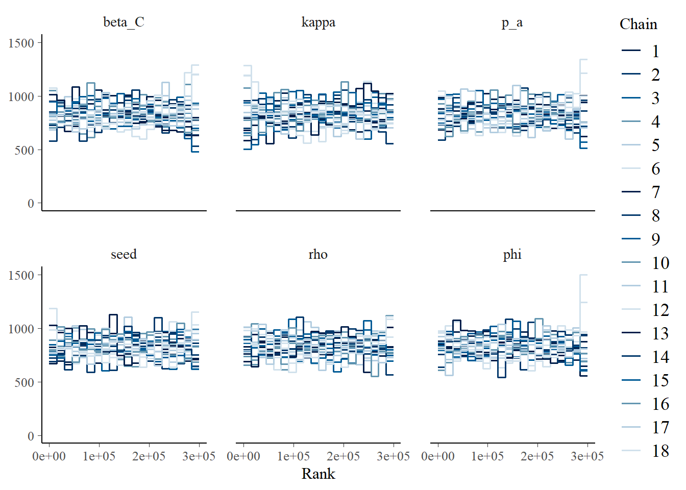
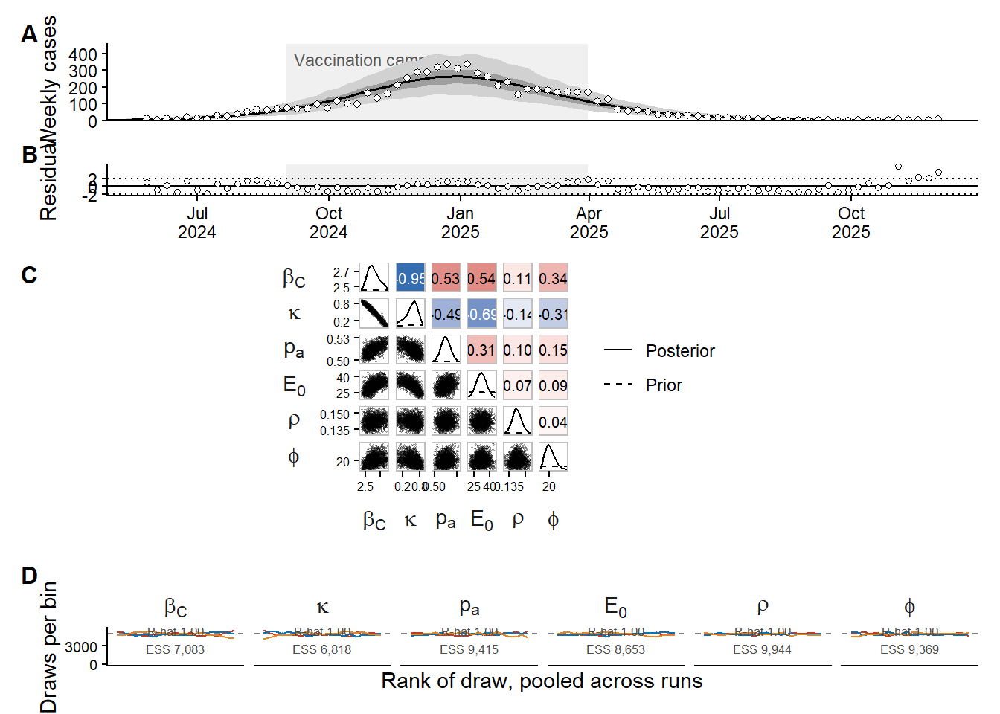
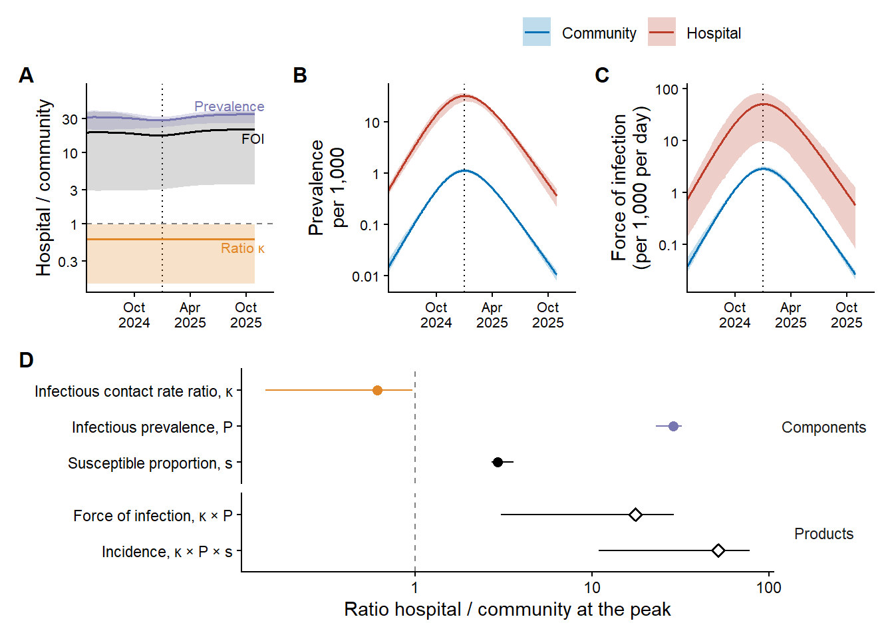
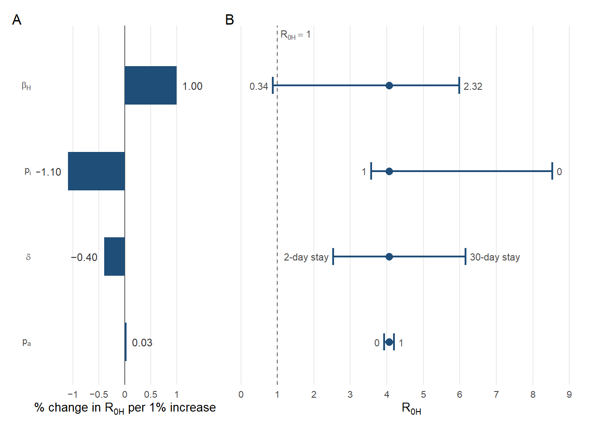
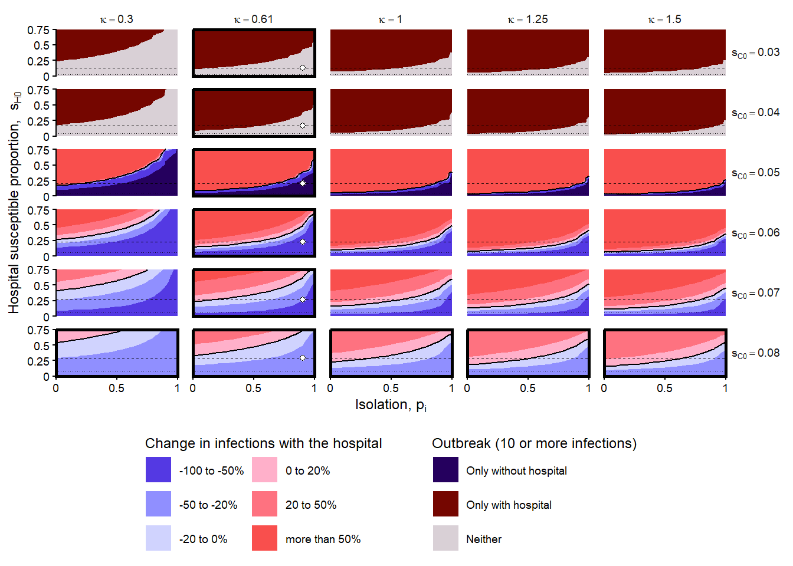
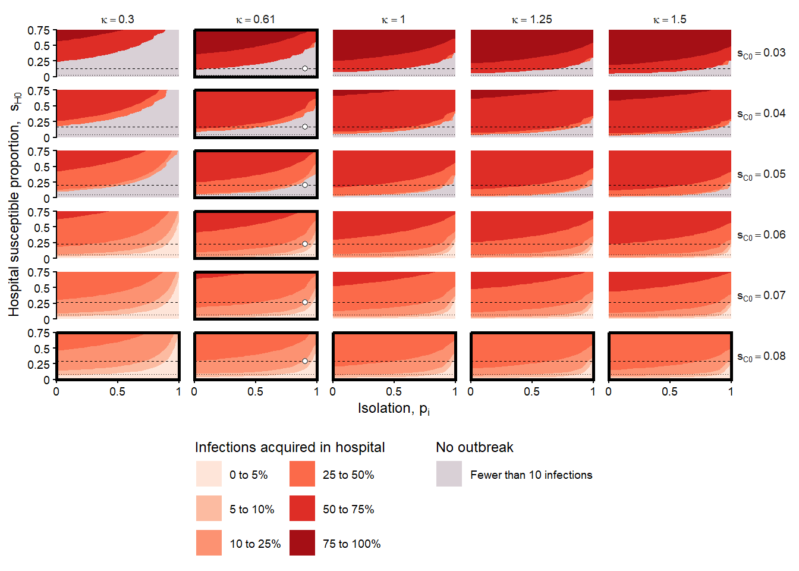

path2data <- paste0("C:/Users/ongph/github/data/dphil")Result 3: Hospital-community model
Constant
Path to data:
Files names:
# Case notification
case_hcmc <- "measles_hcmc_24-25.rds"
# Census of HCMC
census_file <- "census2019_hcm.rds"
# CH1 outpatient
ch1_out_file <- "ch1_visit_day.rds"
# NCH Ha Noi
case_hn <- "measles_hn_final.rds"
# CH2 measles
case_ch2 <- "clinical_cases_ch2.rds"Packages
required <- c(
"tidyverse",
"fitdistrplus",
"ggsci",
"BayesianTools",
"deSolve",
"patchwork",
"bayesplot",
"posterior",
"numDeriv",
"ggnewscale"
)
to_install <- required[!required %in% installed.packages()[, "Package"]]
if (length(to_install))
install.packages(to_install)
invisible(sapply(required, library, character.only = TRUE))
# MASS (via BayesianTools) masks dplyr::select; stats masks dplyr::filter
select <- dplyr::select
filter <- dplyr::filter
set.seed(20260914)Functions
plot_interval <- function(data, var, trim = 0.99,
xlab = "days", ylab = "cases") {
x <- dplyr::pull(data, {{ var }})
x <- x[!is.na(x)]
stats <- tibble(stat = c("mean", "median"),
value = c(mean(x), median(x)))
ggplot(data, aes({{ var }})) +
geom_histogram(binwidth = 1, boundary = -0.5,
fill = "grey80", colour = "white") +
geom_vline(data = stats, aes(xintercept = value, colour = stat, linetype = stat),
linewidth = 0.7) +
scale_colour_manual(values = c(mean = "black", median = "grey40")) +
scale_linetype_manual(values = c(mean = 1, median = 2)) +
coord_cartesian(xlim = quantile(x, c(0, trim))) +
labs(x = xlab, y = ylab, colour = NULL, linetype = NULL) +
theme_classic() +
theme(legend.position = "top")
}
## 95% highest density interval (HDI): the narrowest interval that holds 95% of
## the draws, so every value inside is more probable than every value outside.
## From coda::HPDinterval() (coda is installed with BayesianTools). Returns
## numbers: convert dates back with as.Date().
hdi <- function(x, prob = 0.95) {
h <- coda::HPDinterval(coda::as.mcmc(as.numeric(x)), prob = prob)
c(lo = h[1, "lower"], hi = h[1, "upper"])
}
## the HDI on the log scale, for positive quantities (parameters, rates and
## ratios). The HDI depends on the scale: on the natural scale, values close to 0
## take up almost no width, so the HDI of a quantity with a long tail towards 0
## jumps between windows and looks like spikes on a log axis.
hdi_log <- function(x, prob = 0.95) exp(hdi(log(x), prob))theme_thesis <- theme_classic(base_size = 11) +
theme(strip.background = element_blank(),
strip.text = element_text(size = 11),
legend.position = "top")Data
Census:
df_census <- file.path(path2data, census_file) |>
readRDS()Case notification HCMC (for calibration):
df_hcmc <- file.path(path2data, case_hcmc) |>
readRDS() |>
mutate(
ngay_kp = as.Date(as.numeric(ngay_kp), origin = "1899-12-30"),
onset_delay = ngay_nv - ngay_kp,
inpatient = if_else(tinh_trang == "Điều trị ngoại trú", F, T)
)National Children’s Hospital line list:
df_hn <- file.path(path2data, case_hn) |>
readRDS() |>
mutate(
discharge_date = dmy(date.of.out.hospital),
admission_date = dmy(admission_date),
discharge_date = if_else(
between(as.numeric(discharge_date - admission_date), -366, -300),
discharge_date %m+% years(1),
discharge_date,
missing = discharge_date
),
stay = discharge_date - admission_date,
onset_delay = admission_date - onset_date
)Children’s Hospital 2 in HCMC:
df_ch2 <- file.path(path2data, case_ch2) |>
readRDS() |>
filter(
year(admission) %in% c(2024, 2025)
)Children’s Hospital 1 outpatient:
df_ch1_out <- file.path(path2data, ch1_out_file) |>
readRDS()Model

state_names <- c(
"S_C", "E_C", "I_C_pre", "I_C_post", "R_C",
"S_H", "E_H", "I_H_pre", "I_H_post", "Q", "R_H",
"cum_onset_C", "cum_onset_H", "cum_noso", "cum_adm_rash", "cum_inf_C"
)
measles_ode <- function(t, y, p) {
S_C <- y[["S_C"]]
E_C <- y[["E_C"]]
R_C <- y[["R_C"]]
I_C_pre <- y[["I_C_pre"]]
I_C_post <- y[["I_C_post"]]
S_H <- y[["S_H"]]
E_H <- y[["E_H"]]
R_H <- y[["R_H"]]
Q <- y[["Q"]]
I_H_pre <- y[["I_H_pre"]]
I_H_post <- y[["I_H_post"]]
beta_C <- p[["beta_C"]]
beta_H <- p[["beta_H"]]
xi_alpha <- p[["xi_alpha"]]
alpha <- p[["alpha"]]
p_a <- p[["p_a"]]
p_i <- p[["p_i"]]
sigma <- p[["sigma"]]
eta <- p[["eta"]]
gamma <- p[["gamma"]]
delta <- p[["delta"]]
delta_M <- p[["delta_M"]]
## ---- forces of infection
N_C <- S_C + E_C + I_C_pre + I_C_post + R_C
N_H_mix <- S_H + E_H + I_H_pre + I_H_post + R_H
lambda_C <- beta_C * (I_C_pre + I_C_post) / N_C
lambda_H <- if (N_H_mix > 0) beta_H * (I_H_pre + I_H_post) / N_H_mix else 0 # no hospital: no ward infections
## ---- community
dS_C <- -lambda_C * S_C - xi_alpha * S_C + delta * S_H
dE_C <- lambda_C * S_C - sigma * E_C - xi_alpha * E_C + delta * E_H
## I_C_pre leaves by four routes: rash onset splits three ways, plus general
## admission. The three onset coefficients sum to eta.
dI_C_pre <- sigma * E_C -
(1 - p_a) * eta * I_C_pre - # -> I_C_post
p_a * (1 - p_i) * eta * I_C_pre - # -> I_H_post
p_a * p_i * eta * I_C_pre - # -> Q
xi_alpha * I_C_pre + # -> I_H_pre
delta * I_H_pre # <- I_H_pre
dI_C_post <- (1 - p_a) * eta * I_C_pre - # <- I_C_pre
gamma * I_C_post
dR_C <- gamma * I_C_post - alpha * R_C + delta * R_H + delta_M * Q
## ---- hospital
dS_H <- xi_alpha * S_C - lambda_H * S_H - delta * S_H
dE_H <- lambda_H * S_H + xi_alpha * E_C - sigma * E_H - delta * E_H
## I_H_pre leaves by three routes: rash onset splits two ways, plus discharge.
## The two onset coefficients sum to eta.
dI_H_pre <- sigma * E_H +
xi_alpha * I_C_pre - # <- I_C_pre
(1 - p_i) * eta * I_H_pre - # -> I_H_post
p_i * eta * I_H_pre - # -> Q
delta * I_H_pre # -> I_C_pre
dI_H_post <- (1 - p_i) * eta * I_H_pre + # <- I_H_pre
p_a * (1 - p_i) * eta * I_C_pre - # <- I_C_pre
gamma * I_H_post
dQ <- p_i * eta * I_H_pre + # <- I_H_pre
p_a * p_i * eta * I_C_pre - # <- I_C_pre
delta_M * Q
dR_H <- gamma * I_H_post + alpha * R_C - delta * R_H
## ---- cumulative trackers -------------------------------------------------
dcum_onset_C <- eta * I_C_pre # all community rash onsets
dcum_onset_H <- eta * I_H_pre # admissions, rash appeared AFTER arrival
dcum_noso <- lambda_H * S_H # infections acquired as an inpatient
dcum_adm_rash <- p_a * eta * I_C_pre # admissions, rash present on arrival
dcum_inf_C <- lambda_C * S_C # infections acquired in the community
## names are documentation: deSolve reads this by position, so the order must
## match state_names. The check below enforces that.
list(
c(
S_C = dS_C,
E_C = dE_C,
I_C_pre = dI_C_pre,
I_C_post = dI_C_post,
R_C = dR_C,
S_H = dS_H,
E_H = dE_H,
I_H_pre = dI_H_pre,
I_H_post = dI_H_post,
Q = dQ,
R_H = dR_H,
cum_onset_C = dcum_onset_C,
cum_onset_H = dcum_onset_H,
cum_noso = dcum_noso,
cum_adm_rash = dcum_adm_rash,
cum_inf_C = dcum_inf_C
)
)
}Helpers.
p_i is fixed rather than estimated: it only changes how long I_H_post transmits, which the case series barely sees. It is varied in a sensitivity analysis instead.
p_i_fixed <- 0.9
## s_C0 and s_H0 are fixed inputs, set in the Parameters section. seed is the
## number of latent infections in the community at t = 0.
init_state <- function(seed) {
y <- c(
S_C = s_C0 * N_C0 - seed, E_C = seed,
I_C_pre = 0, I_C_post = 0, R_C = (1 - s_C0) * N_C0,
S_H = s_H0 * N_H0, E_H = 0, I_H_pre = 0, I_H_post = 0, Q = 0,
R_H = (1 - s_H0) * N_H0,
cum_onset_C = 0, cum_onset_H = 0, cum_noso = 0,
cum_adm_rash = 0, cum_inf_C = 0
)
y[state_names]
}
## ODE parameters from the fitted parameters. xi_alpha and alpha depend only on
## the fixed s_C0 and s_H0, so they are computed once, in the Parameters section.
make_params <- function(par) {
c(beta_C = par[["beta_C"]], beta_H = par[["kappa"]] * par[["beta_C"]],
xi_alpha = xi_alpha, alpha = alpha,
p_a = par[["p_a"]],
p_i = if ("p_i" %in% names(par)) par[["p_i"]] else p_i_fixed,
delta = delta, delta_M = delta_M,
sigma = sigma, eta = eta, gamma = gamma)
}
solve_model <- function(par, times) {
out <- tryCatch(
ode(y = init_state(par[["seed"]]),
times = times, func = measles_ode,
parms = make_params(par),
method = "lsoda", atol = 1e-3, rtol = 1e-6),
error = function(e) NULL
)
if (is.null(out) || nrow(out) != length(times) || anyNA(out)) return(NULL)
out
}
## weekly quantities. The two case types partition all rash onsets:
## adm_w = p_a * onset_C + onset_H children admitted with measles
## out_w = (1 - p_a) * onset_C community cases not admitted
run_model <- function(par, n_weeks, full = FALSE) {
sol <- solve_model(par, seq.int(0L, n_weeks * 7L, by = 7L))
if (is.null(sol)) return(NULL)
onset_C <- diff(sol[, "cum_onset_C"])
onset_H <- diff(sol[, "cum_onset_H"])
adm_rash <- diff(sol[, "cum_adm_rash"])
if (!full) {
return(list(adm = adm_rash + onset_H,
out = onset_C - adm_rash))
}
keep <- -1L # drop t = 0, so each row pairs with one diff()
tibble(
week = seq_len(n_weeks),
onset_C = onset_C,
onset_H = onset_H,
adm = adm_rash + onset_H,
out = onset_C - adm_rash,
noso = diff(sol[, "cum_noso"]),
inf_C = diff(sol[, "cum_inf_C"]),
I_H_pre = sol[keep, "I_H_pre"],
I_H_post = sol[keep, "I_H_post"],
Q = sol[keep, "Q"],
N_H = rowSums(sol[keep, c("S_H", "E_H", "I_H_pre",
"I_H_post", "Q", "R_H")])
)
}Parameters
Disease natural history (rate per day):
sigma <- 1 / 8 # exposed -> infectious
eta <- 1 / 4 # pre-rash -> post-rash
gamma <- 1 / 4 # post-rash -> removedHospital population and alpha_bar
Number of children 15 years and under in HCMC:
N <- df_census |>
filter(age <= 15) |>
pull(n) |>
sum()
cat("Total population N:", N)Total population N: 1388365Children’s Hospital 1 reported 90,000 admissions per year. Assume HCMC total is 5 times CH1, of which 40% are HCMC residents. Mean length of stay 5.2 days.
alpha_bar is admissions per community child per day, because in the ODE the admission flows multiply community compartments. Working from the admission count avoids needing N_C0 before alpha_bar is known, and makes the disease-free state balance exactly.
resident_frac <- 0.4
delta <- 1 / 5.2
adm_per_day <- 5 * resident_frac * 90000 / 365
N_H0 <- adm_per_day / delta
N_C0 <- N - N_H0
alpha_bar <- adm_per_day / N_C0
s_C0 <- 0.08
s_H0 <- 0.29
xi <- (s_H0 * (1 - s_C0)) / (s_C0 * (1 - s_H0))
alpha <- alpha_bar / (1 + s_C0 * (xi - 1))
xi_alpha <- xi * alphap_a and the instantaneous-admission assumption
The model admits a fraction p_a of community cases at rash onset, with no delay. That is justified only if the observed onset-to-admission interval is short. HCMC records a median of 0 days; the Hanoi line list is shown here for comparison.
d <- df_hn |>
mutate(ad_delay = as.numeric(admission_date - onset_date)) |>
filter(!is.na(ad_delay), ad_delay >= 0, ad_delay <= 10,
source_province == "community", province == "Ha Noi")
d |> summarise(n = n(), mean = mean(ad_delay), median = median(ad_delay)) n mean median
1 399 2.142857 2plot_interval(d, ad_delay, trim = 0.99,
xlab = "onset to admission delay (days)", ylab = "cases")
delta_M
Discharge rate from isolation, from measles length of stay at Children’s Hospital 2.
d <- df_ch2 |>
mutate(stay = as.numeric(discharge - admission)) |>
filter(!is.na(stay), stay >= 0, stay < 30)
est <- d |> summarise(n = n(), los_M = mean(stay), median = median(stay))
est n los_M median
1 3353 5.787056 5plot_interval(d, stay, xlab = "length of stay (days)", ylab = "cases")
delta_M <- 1 / est$los_M
cat("delta_M:", round(delta_M, 4), " mean isolated stay:",
round(1 / delta_M, 1), "days\n")delta_M: 0.1728 mean isolated stay: 5.8 daysStructural check
Confirms the derivative vector comes back in the order state_names expects and that the population is conserved. It has to run after the constants above, because make_params and init_state read them.
local({
par <- c(beta_C = 2.2, kappa = 0.5, p_a = 0.1, seed = 10)
d <- measles_ode(0, init_state(10), make_params(par))[[1]]
stopifnot(identical(names(d), state_names))
stopifnot(abs(sum(d)) < 1e-6)
cat("model check: state order and conservation OK\n")
})model check: state order and conservation OKDisease-free equilibrium check
With transmission switched off, hospital occupancy and hospital susceptibility must stay flat. Drift means the inputs are inconsistent and every fit inherits an artificial transient.
disease_free <- function(days = 365) {
p <- make_params(c(beta_C = 0, kappa = 0, p_a = 0.1)) # no transmission
ode(y = init_state(0), times = 0:days,
func = measles_ode, parms = p,
method = "lsoda", atol = 1e-3, rtol = 1e-6) |>
as.data.frame() |>
as_tibble() |>
transmute(
day = time,
N_H = S_H + E_H + I_H_pre + I_H_post + Q + R_H,
s_H = S_H / (S_H + E_H + I_H_pre + I_H_post + R_H),
s_C = S_C / (S_C + E_C + I_C_pre + I_C_post + R_C)
)
}
df_check <- disease_free()
df_check |>
summarise(N_H_drift_pct = 100 * (last(N_H) / first(N_H) - 1),
s_H_drift_pct = 100 * (last(s_H) / first(s_H) - 1),
s_C_drift_pct = 100 * (last(s_C) / first(s_C) - 1))# A tibble: 1 × 3
N_H_drift_pct s_H_drift_pct s_C_drift_pct
<dbl> <dbl> <dbl>
1 0 0 0df_check |>
ggplot(aes(day, N_H)) +
geom_hline(yintercept = N_H0, linetype = "dashed") +
geom_line(linewidth = 0.7) +
labs(x = "Day", y = "Hospital population N_H",
subtitle = "Dashed line is the specified N_H(0)") +
theme_classic(base_size = 11)
Calibration
Options
The three fits to compare are:
- total cases, as before:
obs_model = "total",fit_rho = TRUE - no under-reporting:
fit_rho = FALSE - inpatients and outpatients separately:
obs_model = "split"
obs_model <- "total" # "total": one negative binomial on all weekly cases
# "split": one each for inpatients and outpatients
fit_rho <- T # TRUE: estimate the reporting fraction rho
# FALSE: no under-reporting, rho fixed at 1
stopifnot(obs_model %in% c("total", "split"), is.logical(fit_rho))
## fitted parameters for these options
par_names <- c("beta_C", "kappa", "p_a", "seed",
if (fit_rho) "rho",
if (obs_model == "total") "phi" else c("phi_in", "phi_out"))
par_names[1] "beta_C" "kappa" "p_a" "seed" "rho" "phi" ## one file per option, so the fits can be compared later
fit_file <- sprintf("measles_fit_%s_rho%s_sC%s.rds", obs_model, fit_rho, s_C0)Epidemic curve by inpatient and outpatient:
df_week_wide <- df_hcmc |>
filter(age <= 15) |>
mutate(
date = as_date(ngay_nv),
week = floor_date(date, "week", week_start = 1),
type = if_else(inpatient, "inpatient", "outpatient")
) |>
filter(!is.na(week), !is.na(type)) |>
count(week, type, name = "cases") |>
complete(week = seq(min(week), max(week), by = "week"), type,
fill = list(cases = 0)) |>
pivot_wider(names_from = type, values_from = cases, values_fill = 0) |>
mutate(total = inpatient + outpatient,
prop_inpatient = inpatient / total) |>
arrange(week)
n_lead_weeks <- 8 # simulated weeks before the first observed week
obs <- df_week_wide |>
arrange(week) |>
mutate(t_week = row_number() + n_lead_weeks)
n_weeks <- max(obs$t_week)
obs_idx <- obs$t_week
obs_total <- obs$total
obs_in <- obs$inpatient
obs_out <- obs$outpatient
t0_date <- min(obs$week) - 7 * (n_lead_weeks + 1)
n_total <- as.integer(sum(obs$total))
n_in <- as.integer(sum(obs$inpatient))
cat("weeks:", n_weeks, " total:", n_total, " inpatient:", n_in,
" share:", round(n_in / n_total, 3), "\n")weeks: 88 total: 7114 inpatient: 3743 share: 0.526 Likelihood
Weekly reported cases follow a negative binomial distribution, with mean rho times the model’s weekly rash onsets. The options above decide how the model meets the data:
obs_model = "total": one negative binomial for all weekly cases, with meanrho * (adm + out)and dispersionphi.obs_model = "split": one negative binomial for inpatients, with meanrho * adm, and one for outpatients, with meanrho * out. Each has its own dispersion,phi_inandphi_out.fit_rho = FALSE:rhois fixed at 1, so every case is assumed reported.
# loglik <- function(x) {
# par <- setNames(as.numeric(x), par_names)
#
# sim <- run_model(par, n_weeks)
# if (is.null(sim)) return(-Inf)
#
# rho <- if (fit_rho) par[["rho"]] else 1
# mu_in <- rho * sim$adm[obs_idx] # expected reported inpatients
# mu_out <- rho * sim$out[obs_idx] # expected reported outpatients
#
# ll <- if (obs_model == "total") {
# sum(dnbinom(obs_total, mu = mu_in + mu_out, size = par[["phi"]], log = TRUE))
# } else {
# sum(dnbinom(obs_in, mu = mu_in, size = par[["phi_in"]], log = TRUE)) +
# sum(dnbinom(obs_out, mu = mu_out, size = par[["phi_out"]], log = TRUE))
# }
#
# q <- sum(sim$adm) / (sum(sim$adm) + sum(sim$out))
# q <- min(max(q, 1e-6), 1 - 1e-6)
# ll <- ll + dbinom(n_in, n_total, q, log = TRUE)
#
# if (is.finite(ll)) ll else -Inf
# }Prior
## Bounds, prior density and prior sampler of every parameter that can be
## fitted. The options decide which ones are used (par_names).
priors <- list(
beta_C = list(lower = 0.1, upper = 20,
d = \(x) dunif(x, 0.1, 20, log = TRUE),
r = \(n) runif(n, 0.1, 20)),
kappa = list(lower = 0, upper = 10,
d = \(x) dunif(x, 0, 10, log = TRUE),
r = \(n) runif(n, 0, 10)),
p_a = list(lower = 0.005, upper = 0.95, # mean 0.29, deliberately wide
d = \(x) dbeta(x, 2, 5, log = TRUE),
r = \(n) rbeta(n, 2, 5)),
seed = list(lower = 1, upper = 50,
d = \(x) dunif(x, 1, 50, log = TRUE),
r = \(n) runif(n, 1, 50)),
rho = list(lower = 0.001, upper = 1,
d = \(x) dbeta(x, 2, 8, log = TRUE),
r = \(n) rbeta(n, 2, 8)),
phi = list(lower = 0.1, upper = 100,
d = \(x) dunif(x, 0.1, 100, log = TRUE),
r = \(n) runif(n, 0.1, 100))
)
priors$phi_in <- priors$phi # split option: the same prior for each series
priors$phi_out <- priors$phi
lower <- map_dbl(priors[par_names], \(p) p$lower)
upper <- map_dbl(priors[par_names], \(p) p$upper)
## base R only (mapply, not purrr): this also runs on the parallel workers,
## which load deSolve and nothing else
log_prior <- function(x) {
sum(mapply(\(p, v) p$d(v), priors[par_names], as.numeric(x)))
}
## draw from the prior, not from the bounding box, so the DEzs archive starts
## where the prior has weight
prior_sampler <- function(n = 1) {
m <- sapply(priors[par_names], \(p) p$r(n))
if (n == 1) as.numeric(m) else m
}
prior <- createPrior(density = log_prior, sampler = prior_sampler,
lower = lower, upper = upper)Starting point
# r_obs <- 0.0224 # refit over the actual growth phase
#
# p_a_0 <- n_in / n_total
# beta_C_0 <- (r_obs + sigma) * (r_obs + eta) * (r_obs + gamma) /
# (sigma * ((r_obs + gamma) + (1 - p_a_0) * eta)) / s_C0
#
# ## a start value for every parameter; the options pick the ones in use
# p_start <- c(beta_C = beta_C_0, kappa = 0.5, p_a = p_a_0, seed = 25,
# rho = 0.15, phi = 20, phi_in = 20, phi_out = 20)[par_names]
#
# cat("beta_C start", round(beta_C_0, 3), " p_a start", round(p_a_0, 3), "\n")
#
# ## seed only shifts the curve in time, so scale it once on the early weeks
# rho_0 <- if (fit_rho) p_start[["rho"]] else 1
# sim <- run_model(p_start, n_weeks)
# mu0 <- rho_0 * (sim$adm[obs_idx] + sim$out[obs_idx])
# p_start["seed"] <- min(max(p_start[["seed"]] * sum(obs_total[1:8]) / sum(mu0[1:8]), 1.1), 49)
#
# loglik(p_start)
# system.time(replicate(100, loglik(p_start))) # seconds per 100 evaluationsQuick fit by optim
# ## logit for the probabilities, log for the other (positive) parameters
# is_prob <- par_names %in% c("p_a", "rho")
#
# to_free <- function(par) {
# par <- par[par_names]
# x <- log(par)
# x[is_prob] <- qlogis(par[is_prob]) # qlogis is the logit
# x
# }
#
# from_free <- function(x) {
# par <- exp(x)
# par[is_prob] <- plogis(x[is_prob]) # plogis is the inverse logit
# setNames(par, par_names)
# }
#
# neg_logpost <- function(x) {
# if (any(!is.finite(x)) || any(abs(x) > 30)) return(1e10)
# par <- from_free(x)
# if (any(par < lower) || any(par > upper)) return(1e10)
# v <- loglik(par) + log_prior(par)
# if (is.finite(v)) -v else 1e10
# }
#
# fit_map <- function(start) {
# o <- optim(to_free(start), neg_logpost, method = "Nelder-Mead",
# control = list(maxit = 3000, reltol = 1e-8))
# o <- optim(o$par, neg_logpost, method = "Nelder-Mead",
# control = list(maxit = 3000, reltol = 1e-8))
# list(value = o$value, par = from_free(o$par), x = o$par, code = o$convergence)
# }
#
# system.time(map <- fit_map(p_start))
# cat("convergence:", map$code,
# " (0 = converged, 1 = hit maxit, 10 = simplex collapsed)\n")
# cat("neg log posterior:", round(map$value, 2), "\n")
# round(map$par, 4)Six restarts from scattered points, run in parallel.
# cl <- parallel::makeCluster(min(6, parallel::detectCores() - 1))
# parallel::clusterEvalQ(cl, library(deSolve))
# parallel::clusterExport(cl, varlist = ls(globalenv()), envir = globalenv())
#
# multi <- parallel::parLapply(cl, 1:6, function(i) {
# s <- pmin(pmax(p_start * runif(length(p_start), 0.6, 1.6),
# lower + 1e-6), upper - 1e-6)
# o <- fit_map(s)
# c(nlp = o$value, o$par)
# }) |>
# bind_rows() |>
# arrange(nlp)
#
# parallel::stopCluster(cl)
#
# print(multi, n = Inf, width = Inf)For comparison, the log posterior of a flat model that ignores the epidemic entirely. The fit should beat it by hundreds of log units.
# if (obs_model == "total") {
# -sum(dnbinom(obs_total, mu = mean(obs_total), size = 2, log = TRUE))
# } else {
# -sum(dnbinom(obs_in, mu = mean(obs_in), size = 2, log = TRUE)) -
# sum(dnbinom(obs_out, mu = mean(obs_out), size = 2, log = TRUE))
# }Start the sampler from the mode rather than from the hand-derived guess.
# p_start <- map$par
# loglik(p_start)Fit
Three independent DEzs runs, each with six internal chains. The package documentation warns that Gelman diagnostics applied to the internal chains of a single population sampler can be optimistic, because those chains are only argued to be independent after burn-in. nrChains controls independent runs and is separate from the internal chain count.
# n_runs <- 3
# n_chains <- 6
# n_par <- min(n_chains, parallel::detectCores() - 1)
#
# ## Each run needs its own starting matrix, otherwise all three begin in the same
# ## place and the diagnostic means nothing. startValue must be a LIST.
# make_start <- function() {
# t(replicate(n_chains, pmin(
# pmax(p_start[par_names] *
# runif(length(par_names), 0.7, 1.4), lower + 1e-6), upper
# )))
# }
#
# start_list <- replicate(n_runs, make_start(), simplify = FALSE)
#
# start_ll <- sapply(start_list, function(s)
# apply(s, 1, loglik))
# stopifnot(all(is.finite(start_ll)))
# round(start_ll, 1)
#
# setup <- createBayesianSetup(
# likelihood = loglik,
# prior = prior,
# names = par_names,
# parallel = n_par,
# parallelOptions = list(
# variables = "all",
# packages = c("deSolve", "stats", "tibble"),
# dlls = NULL
# )
# )
#
# setup$likelihood$density(start_list[[1]]) # confirm the workers can evaluate
#
# ## iterations and burnin are PER RUN, so total work is n_runs times this
# t_fit <- system.time(fit <- runMCMC(
# setup,
# "DEzs",
# settings = list(
# iterations = 1.5e5,
# burnin = 5e4,
# startValue = start_list,
# nrChains = n_runs,
# message = TRUE
# )
# ))
# t_fit
#
# stopParallel(setup)
# # saveRDS(fit, fit_file)Diagnostics
fit <- readRDS(fit_file)
gelmanDiagnostics(fit, plot = FALSE)Potential scale reduction factors:
Point est. Upper C.I.
beta_C 1 1.01
kappa 1 1.01
p_a 1 1.00
seed 1 1.00
rho 1 1.00
phi 1 1.00
Multivariate psrf
1summary(fit)# # # # # # # # # # # # # # # # # # # # # # # # #
## MCMC chain summary ##
# # # # # # # # # # # # # # # # # # # # # # # # #
# MCMC sampler: DEzs
# Nr. Chains: 18
# Iterations per chain: 16668
# Rejection rate: 0.81
# Effective sample size: 9035
# Runtime: 3305.03 sec.
# Parameters
psf MAP 2.5% median 97.5%
beta_C 1.003 2.573 2.478 2.599 2.767
kappa 1.003 0.612 0.067 0.544 0.842
p_a 1.002 0.512 0.502 0.515 0.528
seed 1.003 29.579 22.257 31.681 41.519
rho 1.001 0.142 0.134 0.142 0.151
phi 1.003 20.439 11.549 20.148 33.745
## DIC: 674.013
## Convergence
Gelman Rubin multivariate psrf: 1.004
## Correlations
beta_C kappa p_a seed rho phi
beta_C 1.000 -0.973 0.614 0.557 0.156 0.346
kappa -0.973 1.000 -0.546 -0.696 -0.149 -0.307
p_a 0.614 -0.546 1.000 0.356 0.095 0.160
seed 0.557 -0.696 0.356 1.000 0.075 0.084
rho 0.156 -0.149 0.095 0.075 1.000 0.043
phi 0.346 -0.307 0.160 0.084 0.043 1.000# correlationPlot(fit)
draws <- getSample(fit, coda = TRUE) |>
posterior::as_draws_df()
## quantile2 returns q2.5 and q97.5. "q5" is not a summary function name, which
## is why passing it as a string fails.
posterior::summarise_draws(
draws,
~ posterior::quantile2(.x, probs = c(0.025, 0.975)),
"rhat", "ess_bulk", "ess_tail"
) |>
print(n = Inf)# A tibble: 6 × 6
variable q2.5 q97.5 rhat ess_bulk ess_tail
<chr> <dbl> <dbl> <dbl> <dbl> <dbl>
1 beta_C 2.48 2.77 1.00 7083. 8791.
2 kappa 0.0671 0.842 1.00 6818. 7906.
3 p_a 0.502 0.528 1.00 9415. 14198.
4 seed 22.3 41.5 1.00 8653. 14490.
5 rho 0.134 0.151 1.00 9944. 14884.
6 phi 11.5 33.7 1.00 9369. 11318.# targets: rhat < 1.01, ess_bulk and ess_tail above 400 per parameter
bayesplot::mcmc_rank_overlay(draws)
## Monte Carlo error of the interval limits
posterior::summarise_draws(
draws,
~ posterior::mcse_quantile(.x, probs = c(0.025, 0.975))
)# A tibble: 6 × 3
variable mcse_q2.5 mcse_q97.5
<chr> <dbl> <dbl>
1 beta_C 0.00107 0.00128
2 kappa 0.00462 0.00215
3 p_a 0.000127 0.000125
4 seed 0.0993 0.111
5 rho 0.0000828 0.000109
6 phi 0.0637 0.260 ## Best draw (highest log posterior) of each independent run. Runs that explored
## the same posterior should reach about the same best log posterior.
map_dfr(seq_along(fit), \(i) {
b <- MAP(fit[[i]])
as_tibble_row(c(run = i, b$valuesMAP, b$parametersMAP))
})# A tibble: 3 × 10
run Lposterior Llikelihood Lprior beta_C kappa p_a seed rho phi
<dbl> <dbl> <dbl> <dbl> <dbl> <dbl> <dbl> <dbl> <dbl> <dbl>
1 1 -344. -332. -12.3 2.58 0.611 0.514 29.5 0.141 22.1
2 2 -344. -332. -12.3 2.57 0.612 0.512 29.6 0.142 20.4
3 3 -344. -332. -12.3 2.58 0.600 0.512 30.6 0.141 20.0Posterior
## derived quantities (thesis Section 4.3.5); s_C0, s_H0 and xi_alpha are fixed.
## One function, so the posterior draws and the MAP use the same formulas.
add_derived <- function(d) {
d |>
mutate(
beta_H = kappa * beta_C,
D_C = (eta + delta) / (eta + xi_alpha + delta) * (1 / eta + (1 - p_a) / gamma),
R0C = beta_C * D_C, # community, everyone susceptible
R_C_eff = s_C0 * R0C, # community, at the start of the outbreak
R0H = beta_H * ((eta + xi_alpha) / (eta * (eta + xi_alpha + delta)) +
(1 - p_i_fixed) / gamma * (eta + xi_alpha + p_a * delta) /
(eta + xi_alpha + delta)),
per_case_ratio = kappa * s_H0 / s_C0 # infections per case, H relative to C
)
}
post <- getSample(fit) |>
as.data.frame() |>
setNames(par_names) |>
as_tibble() |>
add_derived()
## MAP: the posterior draw with the highest log posterior (BayesianTools::MAP).
## Derived quantities are computed at this one parameter set.
best <- MAP(fit)
map_row <- as_tibble_row(best$parametersMAP[par_names]) |> add_derived()
vars <- c("beta_C", "beta_H", "R0C", "R_C_eff", "R0H", "kappa", "p_a",
"per_case_ratio", "seed",
intersect(c("rho", "phi", "phi_in", "phi_out"), names(post)))
map_long <- map_row |>
select(all_of(vars)) |>
pivot_longer(everything(), names_to = "par", values_to = "MAP")
post_map_val <- post |>
select(all_of(vars)) |>
pivot_longer(everything(), names_to = "par") |>
group_by(par = factor(par, levels = vars)) |>
summarise(lo = hdi_log(value)[["lo"]], hi = hdi_log(value)[["hi"]]) |>
mutate(par = as.character(par)) |>
left_join(map_long, by = "par") |>
relocate(MAP, .after = par) |>
mutate(crI = paste0(sprintf("%.2f", lo), "-", sprintf("%.2f", hi))) |>
# write.csv("post.csv", quote = F, row.names = F)
print(n = Inf)# A tibble: 11 × 5
par MAP lo hi crI
<chr> <dbl> <dbl> <dbl> <chr>
1 beta_C 2.57 2.48 2.77 2.48-2.77
2 beta_H 1.57 0.342 2.32 0.34-2.32
3 R0C 15.3 14.7 16.3 14.75-16.30
4 R_C_eff 1.22 1.18 1.30 1.18-1.30
5 R0H 4.06 0.882 6.00 0.88-6.00
6 kappa 0.612 0.124 0.950 0.12-0.95
7 p_a 0.512 0.502 0.528 0.50-0.53
8 per_case_ratio 2.22 0.451 3.44 0.45-3.44
9 seed 29.6 22.8 42.2 22.76-42.19
10 rho 0.142 0.134 0.151 0.13-0.15
11 phi 20.4 11.8 34.4 11.82-34.44post_map_val# A tibble: 11 × 5
par MAP lo hi crI
<chr> <dbl> <dbl> <dbl> <chr>
1 beta_C 2.57 2.48 2.77 2.48-2.77
2 beta_H 1.57 0.342 2.32 0.34-2.32
3 R0C 15.3 14.7 16.3 14.75-16.30
4 R_C_eff 1.22 1.18 1.30 1.18-1.30
5 R0H 4.06 0.882 6.00 0.88-6.00
6 kappa 0.612 0.124 0.950 0.12-0.95
7 p_a 0.512 0.502 0.528 0.50-0.53
8 per_case_ratio 2.22 0.451 3.44 0.45-3.44
9 seed 29.6 22.8 42.2 22.76-42.19
10 rho 0.142 0.134 0.151 0.13-0.15
11 phi 20.4 11.8 34.4 11.82-34.44## check: the HDI (log scale) against the equal-tailed interval (2.5% and 97.5%
## quantiles), and whether the MAP falls inside each
post |>
select(all_of(vars)) |>
pivot_longer(everything(), names_to = "par") |>
group_by(par = factor(par, levels = vars)) |>
summarise(eti_lo = quantile(value, 0.025), eti_hi = quantile(value, 0.975),
hdi_lo = hdi_log(value)[["lo"]], hdi_hi = hdi_log(value)[["hi"]]) |>
mutate(par = as.character(par)) |>
left_join(map_long, by = "par") |>
mutate(map_in_eti = between(MAP, eti_lo, eti_hi),
map_in_hdi = between(MAP, hdi_lo, hdi_hi)) |>
print(n = Inf, width = Inf)# A tibble: 11 × 8
par eti_lo eti_hi hdi_lo hdi_hi MAP map_in_eti map_in_hdi
<chr> <dbl> <dbl> <dbl> <dbl> <dbl> <lgl> <lgl>
1 beta_C 2.48 2.77 2.48 2.77 2.57 TRUE TRUE
2 beta_H 0.186 2.09 0.342 2.32 1.57 TRUE TRUE
3 R0C 14.7 16.3 14.7 16.3 15.3 TRUE TRUE
4 R_C_eff 1.18 1.30 1.18 1.30 1.22 TRUE TRUE
5 R0H 0.480 5.40 0.882 6.00 4.06 TRUE TRUE
6 kappa 0.0671 0.842 0.124 0.950 0.612 TRUE TRUE
7 p_a 0.502 0.528 0.502 0.528 0.512 TRUE TRUE
8 per_case_ratio 0.243 3.05 0.451 3.44 2.22 TRUE TRUE
9 seed 22.3 41.5 22.8 42.2 29.6 TRUE TRUE
10 rho 0.134 0.151 0.134 0.151 0.142 TRUE TRUE
11 phi 11.5 33.7 11.8 34.4 20.4 TRUE TRUE Prediction vs observation
set.seed(20260921)
wk2date <- function(w) t0_date + 7 * w
## posterior predictive draws. y_rep is the weekly total; in the split option it
## is the sum of the inpatient and outpatient draws.
pp <- post |>
slice_sample(n = 1000) |>
mutate(draw = row_number()) |>
group_split(draw) |>
map_dfr(function(d) {
par <- unlist(d[par_names])
s <- run_model(par, n_weeks, full = TRUE)
if (is.null(s)) return(NULL)
rho <- if (fit_rho) d$rho else 1
res <- tibble(draw = d$draw,
week = s$week,
mu_in = rho * s$adm,
mu_out = rho * s$out,
mu = mu_in + mu_out,
share = s$adm / (s$adm + s$out),
noso = s$noso)
if (obs_model == "total") {
res |> mutate(y_rep = rnbinom(n(), mu = mu, size = d$phi))
} else {
res |> mutate(y_in = rnbinom(n(), mu = mu_in, size = d$phi_in),
y_out = rnbinom(n(), mu = mu_out, size = d$phi_out),
y_rep = y_in + y_out)
}
})
band <- pp |>
group_by(week) |>
summarise(lo95 = hdi(y_rep)[["lo"]], hi95 = hdi(y_rep)[["hi"]],
lo50 = hdi(y_rep, 0.5)[["lo"]], hi50 = hdi(y_rep, 0.5)[["hi"]],
.groups = "drop") |>
mutate(date = wk2date(week))
## the MAP: expected weekly cases (the line in A), the negative binomial SD at
## that mean, and the 95% HDI of 10,000 negative binomial draws (B)
p_map <- best$parametersMAP
s_map <- run_model(p_map, n_weeks, full = TRUE)
rho_map <- if (fit_rho) p_map[["rho"]] else 1
nb_draws <- function(mu_in, mu_out, n = 1e4) {
if (obs_model == "total") {
rnbinom(n, mu = mu_in + mu_out, size = p_map[["phi"]])
} else {
rnbinom(n, mu = mu_in, size = p_map[["phi_in"]]) +
rnbinom(n, mu = mu_out, size = p_map[["phi_out"]])
}
}
map_week <- tibble(week = s_map$week,
mu_in = rho_map * s_map$adm,
mu_out = rho_map * s_map$out) |>
mutate(mu = mu_in + mu_out,
sd = if (obs_model == "total") sqrt(mu + mu^2 / p_map[["phi"]]) else
sqrt(mu_in + mu_in^2 / p_map[["phi_in"]] + mu_out + mu_out^2 / p_map[["phi_out"]]),
int = map2(mu_in, mu_out, \(a, b) hdi(nb_draws(a, b))),
date = wk2date(week)) |>
unnest_wider(int)
obs_d <- obs |> mutate(date = wk2date(t_week))Plot calibration
## plotmath labels: kappa prints as a Greek letter, p_a as p with a subscript
lbl <- c(beta_C = "beta[C]", kappa = "kappa", p_a = "p[a]", seed = "E[0]",
rho = "rho", phi = "phi", phi_in = "phi['in']", phi_out = "phi['out']")
save_fig <- function(p, file, width = 16, height) {
ggsave(file.path("figs/chap3", file), p, width = width, height = height,
units = "cm", dpi = 300, bg = "white")
}
## the campaign is not in the model; shading it shows where the model may depart
## from the data. Replace the two dates with the range of df_cp.
campaign <- tibble(start = as.Date("2024-09-01"), end = as.Date("2025-03-31"))
campaign_layer <- geom_rect(
data = campaign, aes(xmin = start, xmax = end, ymin = -Inf, ymax = Inf),
inherit.aes = FALSE, fill = "grey94")
date_axis <- list(
scale_x_date(date_breaks = "3 months", date_labels = "%b\n%Y"),
coord_cartesian(xlim = range(obs_d$date))
)
# =============================================================================
# Fit
# =============================================================================
fig_fit <- ggplot(band, aes(date)) +
campaign_layer +
annotate("text", x = campaign$start, y = Inf, label = "Vaccination campaign",
hjust = -0.05, vjust = 1.6, size = 3, colour = "grey35") +
geom_ribbon(aes(ymin = lo95, ymax = hi95), fill = "grey82") +
geom_ribbon(aes(ymin = lo50, ymax = hi50), fill = "grey62") +
geom_line(data = map_week, aes(y = mu), linewidth = 0.6) +
geom_point(data = obs_d, aes(date, total),
shape = 21, fill = "white", size = 1.5, stroke = 0.5) +
date_axis +
scale_y_continuous(expand = expansion(mult = c(0, 0.15))) + # room for the label
labs(x = NULL, y = "Weekly cases") +
theme_thesis
# =============================================================================
# Residuals
#
# Pearson residuals at the MAP: observed minus the expected weekly cases at the
# MAP, divided by the negative binomial SD at the MAP. The dotted lines are the
# 95% HDI of the negative binomial at the MAP, on the same scale. Runs of
# same-signed residuals mean structure the model does not capture.
# =============================================================================
resid_df <- obs_d |>
left_join(map_week |> select(week, mu, sd, lo, hi), by = c("t_week" = "week")) |>
mutate(resid = (total - mu) / sd, # Pearson residual at the MAP
lo = (lo - mu) / sd, # 95% HDI of the negative binomial at the MAP
hi = (hi - mu) / sd)
fig_resid <- ggplot(resid_df, aes(date, resid)) +
campaign_layer +
geom_hline(yintercept = 0, linewidth = 0.4) +
geom_line(aes(y = lo), linetype = "dotted", linewidth = 0.4) +
geom_line(aes(y = hi), linetype = "dotted", linewidth = 0.4) +
geom_point(shape = 21, fill = "white", size = 1.3, stroke = 0.5) +
date_axis +
labs(x = NULL, y = "Residual") +
theme_thesis
# =============================================================================
# Posterior distributions and correlations
#
# Diagonal: posterior and prior densities, both scaled by the posterior's peak,
# so a prior that the data overrode reads as flat. Lower triangle: 2,000 joint
# draws, minus the few outside the axis range. Upper triangle: posterior
# correlation.
# =============================================================================
post_p <- post |> select(all_of(par_names))
prior_p <- prior_sampler(20000) |> as.data.frame() |> setNames(par_names)
## axis range per parameter: the central 99% of the posterior
lo <- map_dbl(post_p, ~ quantile(.x, 0.005))
hi <- map_dbl(post_p, ~ quantile(.x, 0.995))
mid <- (lo + hi) / 2
cells <- expand_grid(xvar = par_names, yvar = par_names) |>
mutate(i = match(yvar, par_names), j = match(xvar, par_names))
as_panel <- function(d) {
d |> mutate(xvar = factor(xvar, levels = par_names),
yvar = factor(yvar, levels = par_names))
}
thin <- post_p |> slice_sample(n = 2000)
## a draw outside the range would stretch its row or column, so drop it
pts <- cells |>
filter(i > j) |>
mutate(xy = map2(xvar, yvar, ~ tibble(x = thin[[.x]], y = thin[[.y]]))) |>
unnest(xy) |>
filter(x >= lo[xvar], x <= hi[xvar], y >= lo[yvar], y <= hi[yvar]) |>
as_panel()
dens <- map_dfr(par_names, function(p) {
d_post <- density(post_p[[p]], from = lo[[p]], to = hi[[p]], n = 200)
d_pri <- density(prior_p[[p]], from = lo[[p]], to = hi[[p]], n = 200)
k <- 0.95 * (hi[[p]] - lo[[p]]) / max(d_post$y)
bind_rows(tibble(dist = "Posterior", x = d_post$x, y = lo[[p]] + k * d_post$y),
tibble(dist = "Prior", x = d_pri$x, y = lo[[p]] + k * d_pri$y)) |>
mutate(xvar = p, yvar = p)
}) |>
as_panel()
cors <- cells |>
filter(i < j) |>
mutate(r = map2_dbl(xvar, yvar, ~ cor(post_p[[.x]], post_p[[.y]])),
x = mid[xvar], y = mid[yvar]) |>
as_panel()
## at most two ticks per axis, away from the panel edges. If the two ticks are
## closer than 45% of the range, their labels can touch, so keep only the tick
## nearer the middle.
two_breaks <- function(l) {
b <- pretty(l, n = 4)
b <- b[b > l[1] + 0.1 * diff(l) & b < l[2] - 0.1 * diff(l)]
if (length(b) > 2) b <- b[c(1, length(b))]
if (length(b) == 2 && diff(b) < 0.45 * diff(l)) b <- b[which.min(abs(b - mean(l)))]
b
}
## hold every row and column to its parameter's range
limits <- bind_rows(
cells |> transmute(xvar, yvar, x = lo[xvar], y = lo[yvar]),
cells |> transmute(xvar, yvar, x = hi[xvar], y = hi[yvar])
) |>
as_panel()
fig_corner <- ggplot() +
geom_blank(data = limits, aes(x, y)) +
geom_rect(data = cors, aes(xmin = -Inf, xmax = Inf, ymin = -Inf, ymax = Inf,
fill = r)) +
geom_text(data = cors, aes(x, y, label = sprintf("%.2f", r),
colour = abs(r) > 0.6), size = 2.6) +
geom_point(data = pts, aes(x, y), size = 0.2, alpha = 0.25) +
geom_line(data = dens, aes(x, y, linetype = dist), linewidth = 0.4) +
facet_grid(yvar ~ xvar, scales = "free", switch = "both",
labeller = as_labeller(lbl, default = label_parsed)) +
scale_fill_gradient2(low = "#2166AC", mid = "white", high = "#B2182B",
limits = c(-1, 1), guide = "none") +
scale_colour_manual(values = c(`FALSE` = "black", `TRUE` = "white"),
guide = "none") +
scale_linetype_manual(values = c(Posterior = "solid", Prior = "dashed"),
name = NULL) +
scale_x_continuous(breaks = two_breaks,
guide = guide_axis(check.overlap = TRUE)) +
scale_y_continuous(breaks = two_breaks,
guide = guide_axis(check.overlap = TRUE)) +
labs(x = NULL, y = NULL) +
theme_thesis +
theme(aspect.ratio = 1, # square cells
strip.placement = "outside",
strip.text.y.left = element_text(angle = 0), # horizontal row labels
panel.border = element_rect(colour = "grey75", fill = NA),
axis.line = element_blank(),
axis.text = element_text(size = 6),
panel.spacing = unit(1.2, "mm"),
legend.position = "right") # the empty space on the right
# =============================================================================
# Rank plots, one line per independent run, with R-hat and ESS
#
# Each run's six internal chains are pooled, so the plot compares the three
# independent runs. Draws come from each run separately, so the grouping does
# not depend on how getSample() orders chains in the combined object.
# =============================================================================
by_run <- map_dfr(seq_along(fit), function(i) {
getSample(fit[[i]]) |>
as.data.frame() |>
setNames(par_names) |>
mutate(run = factor(i))
})
stopifnot(nrow(by_run) == nrow(getSample(fit))) # same draws as elsewhere
n_bins <- 20
rank_break <- seq(0, nrow(by_run), length.out = n_bins + 1) # equal-count bins
expected <- nrow(by_run) / nlevels(by_run$run) / n_bins # per bin if uniform
rank_df <- by_run |>
pivot_longer(-run, names_to = "parameter") |>
mutate(parameter = factor(parameter, levels = par_names)) |>
group_by(parameter) |>
mutate(rank = rank(value)) |>
ungroup()
## rank-normalised R-hat and the smaller of bulk and tail ESS, per parameter
conv <- posterior::summarise_draws(draws, "rhat", "ess_bulk", "ess_tail") |>
filter(variable %in% par_names) |>
transmute(parameter = factor(variable, levels = par_names),
x = nrow(by_run) / 2,
label = sprintf("R-hat %.2f\nESS %s", rhat,
format(round(pmin(ess_bulk, ess_tail)),
big.mark = ",")))
fig_rank <- ggplot(rank_df, aes(rank, colour = run)) +
geom_hline(yintercept = expected, linetype = "dashed", colour = "grey50") +
stat_bin(geom = "line", breaks = rank_break, pad = FALSE,
position = "identity", linewidth = 0.5) +
geom_text(data = conv, aes(x, 0, label = label), inherit.aes = FALSE,
vjust = -0.4, size = 2.2, colour = "grey30") +
facet_wrap(~ parameter, nrow = 1, # one row saves height
labeller = as_labeller(lbl, default = label_parsed)) +
ggsci::scale_colour_nejm(guide = "none") + # lines are runs; see caption
scale_x_continuous(breaks = NULL) +
scale_y_continuous(limits = c(0, NA), n.breaks = 3) +
labs(x = "Rank of draw, pooled across runs", y = "Draws per bin") +
theme_thesis +
theme(axis.text.y = element_text(size = 7))
# =============================================================================
# One figure
#
# wrap_elements() places C as one image. Without it, patchwork lines up C's
# outside row labels with the axes of A, B and D, and that leaves a gap between
# their axes and their plots.
# =============================================================================
fig_all <-
(fig_fit + theme(axis.text.x = element_blank(),
axis.ticks.x = element_blank())) /
fig_resid /
wrap_elements(full = fig_corner) /
fig_rank +
plot_layout(heights = c(4.5, 1.8, 15, 2.2)) +
plot_annotation(tag_levels = "A") &
theme(plot.tag = element_text(face = "bold", size = 12))
fig_all
# save_fig(fig_all, "fig_calibration_afterM.png", height = 21)Values calibration
fmt <- function(x, d = 2) formatC(x, format = "f", digits = d, big.mark = ",")
## point estimate `at` (the MAP) and the 95% HDI of the draws `x`
est_ci <- function(x, at, d = 2) {
h <- hdi_log(x)
sprintf("%s (%s to %s)", fmt(at, d), fmt(h[["lo"]], d), fmt(h[["hi"]], d))
}
## 1. weekly counts inside the 95% posterior predictive HDI
cov <- obs |>
left_join(band |> select(week, lo95, hi95), by = c("t_week" = "week")) |>
summarise(n_in_band = sum(total >= lo95 & total <= hi95),
n_weeks = n(),
pct = 100 * n_in_band / n_weeks)
## 2. fitted totals per draw, over observed weeks only (lead weeks excluded).
## rho cancels in the share, so it is the model's share of admitted cases.
tot <- pp |>
filter(week %in% obs_idx) |>
group_by(draw) |>
summarise(rep_total = sum(mu),
share = sum(mu_in) / sum(mu_in + mu_out),
.groups = "drop")
## the same two totals at the MAP (Posterior section)
sim_map <- run_model(best$parametersMAP, n_weeks)
rho_map <- if (fit_rho) best$parametersMAP[["rho"]] else 1
map_tot <- c(rep_total = rho_map * sum(sim_map$adm[obs_idx] + sim_map$out[obs_idx]),
share = sum(sim_map$adm[obs_idx]) /
sum(sim_map$adm[obs_idx] + sim_map$out[obs_idx]))
## 3. parameter estimates and contraction relative to the prior
prior_draws <- prior_sampler(20000) |>
as.data.frame() |>
setNames(par_names) |>
as_tibble()
par_tab <- tibble(parameter = par_names) |>
mutate(estimate = map_chr(parameter, ~ est_ci(post[[.x]], map_row[[.x]], 3)),
contraction = map_dbl(parameter,
~ 1 - var(post[[.x]]) / var(prior_draws[[.x]])))
cov
tot |> summarise(rep_total = est_ci(rep_total, map_tot[["rep_total"]], 0),
share = est_ci(share, map_tot[["share"]], 3))
print(par_tab, n = Inf)
## the paragraph, filled in
rho_txt <- if (fit_rho) est_ci(post$rho, map_row$rho) else "fixed at 1"
cat(sprintf(paste0(
"%d of %d weekly counts (%.0f%%) fell inside the 95%% posterior predictive ",
"HDI. Values are MAP (95%% HDI). The model gave %s reported cases against ",
"%s observed, and an inpatient share of %s against %s observed; both were ",
"fitted. The community effective reproduction number was %s, p_a %s and ",
"rho %s, with s_C0 and s_H0 fixed at %s and %s. kappa was %s, conditional ",
"on p_i = %s.\n"),
cov$n_in_band, cov$n_weeks, cov$pct,
est_ci(tot$rep_total, map_tot[["rep_total"]], 0), fmt(n_total, 0),
est_ci(tot$share, map_tot[["share"]], 3), fmt(n_in / n_total, 3),
est_ci(post$R_C_eff, map_row$R_C_eff), est_ci(post$p_a, map_row$p_a), rho_txt,
s_C0, s_H0,
est_ci(post$kappa, map_row$kappa), p_i_fixed))Coverage of the 95% predictive interval. With 80 observations it should be near 0.95; much less means the model is overconfident, much more means phi has grown to absorb misfit.
obs_d |>
left_join(band |> select(week, lo95, hi95), by = c("t_week" = "week")) |>
summarise(coverage_95 = mean(total >= lo95 & total <= hi95))Force of infection
set.seed(20260922)
n_draws <- 1000 # 200 is enough while adjusting the layout
## own names for the theme and the date axis of these figures, so theme_thesis
## and date_axis of the calibration figure stay as Part 1 set them
theme_plain <- theme_classic(base_size = 11) +
theme(strip.background = element_blank(),
legend.title = element_blank())
narrow <- theme(axis.text = element_text(size = 8)) # three panels in a row
date_axis_6m <- list(
scale_x_date(date_breaks = "6 months", date_labels = "%b\n%Y"),
coord_cartesian(xlim = range(obs$week))
)
setting_col <- c(Hospital = "#BC3C29", Community = "#0072B5")
kappa_col <- "#E18727"
prev_col <- "#7876B1" # infectious prevalence ratio, in panels A and D
x_right <- max(obs$week) # labels end here, inside the visible range
## ---- simulate each posterior draw -------------------------------------------
par_of <- function(d) {
c(setNames(as.numeric(d[par_names]), par_names), p_i = p_i_fixed)
}
## model day t is the date t0_date + 7 + t: wk2date() labels model week w with
## t0_date + 7 * w, the Monday that starts it, and week 1 starts on day 0
trajectory <- function(par, days = n_weeks * 7) {
sol <- solve_model(par, 0:days)
if (is.null(sol)) return(NULL)
beta_C <- par[["beta_C"]]
beta_H <- par[["kappa"]] * beta_C
as.data.frame(sol) |>
as_tibble() |>
transmute(
date = t0_date + 7 + time,
prev_C = (I_C_pre + I_C_post) / (S_C + E_C + I_C_pre + I_C_post + R_C),
prev_H = (I_H_pre + I_H_post) / (S_H + E_H + I_H_pre + I_H_post + R_H),
s_C = S_C / (S_C + E_C + I_C_pre + I_C_post + R_C),
s_H = S_H / (S_H + E_H + I_H_pre + I_H_post + R_H),
lambda_C = beta_C * prev_C,
lambda_H = beta_H * prev_H
)
}
traj <- post |>
slice_sample(n = n_draws) |>
mutate(draw = row_number()) |>
group_split(draw) |>
map_dfr(function(d) {
s <- trajectory(par_of(d))
if (is.null(s)) return(NULL)
s |> mutate(draw = d$draw, kappa = d$kappa, beta_C = d$beta_C)
})
## dates on which the outbreak is under way (median community prevalence above
## 1 in 100,000); ratios of near-zero prevalences are not meaningful
window <- traj |>
group_by(date) |>
summarise(p = median(prev_C), .groups = "drop") |>
filter(p > 1e-5) |>
pull(date)
## each draw at its own peak of community prevalence, for the 95% HDI of kappa
## in A and of every ratio in D
peaks <- traj |>
group_by(draw) |>
slice_max(prev_C, n = 1, with_ties = FALSE) |>
ungroup()
## the MAP parameter set (Posterior section): its trajectory gives every line
## and point in the figure; the draws give the 95% HDI around them
traj_map <- trajectory(par_of(map_row)) |>
mutate(kappa = map_row$kappa)
peak_map <- traj_map |> slice_max(prev_C, n = 1, with_ties = FALSE)
peak_date <- peak_map$date
## ---- A: the result ------------------------------------------------------------
## the force of infection ratio is the product of the two other ratios in the
## panel: lambda_H / lambda_C = kappa x P, with P the infectious prevalence ratio
ratio_t <- traj |> # 95% HDI, day by day
filter(date %in% window) |>
mutate(foi = lambda_H / lambda_C,
prev = prev_H / prev_C) |>
pivot_longer(c(foi, prev), names_to = "ratio") |>
group_by(ratio, date) |>
summarise(lo = hdi_log(value)[["lo"]],
hi = hdi_log(value)[["hi"]], .groups = "drop")
ratio_map <- traj_map |> # the MAP lines
filter(date %in% window) |>
transmute(date,
foi = lambda_H / lambda_C,
prev = prev_H / prev_C) |>
pivot_longer(-date, names_to = "ratio", values_to = "map")
## kappa: the MAP value, with the 95% HDI of the draws
kq <- c(hdi_log(peaks$kappa)[["lo"]], map_row$kappa, hdi_log(peaks$kappa)[["hi"]])
## where each line ends, to place its label
end_y <- ratio_map |>
filter(date <= x_right) |>
group_by(ratio) |>
slice_max(date, n = 1) |>
select(ratio, map) |>
deframe()
## Each label goes on the side of its line with more room. On the log scale, the
## room above the kappa x P line (up to P) and above the kappa line (up to 1) is a
## factor of 1 / kappa. The room below is a factor of kappa x P (down to 1) and of
## kappa / the lower end of its HDI (down to the bottom of its band).
vj <- function(above) if (above) -0.3 else 1.3
vj_foi <- vj(1 / kq[[2]] > end_y[["foi"]])
vj_kappa <- vj(1 / kq[[2]] > kq[[2]] / kq[[1]])
pA <- ggplot(mapping = aes(date)) +
geom_hline(yintercept = 1, linetype = "dashed", colour = "grey50") +
geom_vline(xintercept = peak_date, linetype = "dotted") +
annotate("rect", xmin = min(window), xmax = max(window),
ymin = kq[[1]], ymax = kq[[3]], fill = kappa_col, alpha = 0.25) +
annotate("segment", x = min(window), xend = max(window),
y = kq[[2]], yend = kq[[2]], colour = kappa_col, linewidth = 0.6) +
geom_ribbon(data = ratio_t, aes(ymin = lo, ymax = hi, fill = ratio), alpha = 0.25) +
geom_line(data = ratio_map, aes(y = map, colour = ratio), linewidth = 0.6) +
scale_fill_manual(values = c(foi = "grey40", prev = prev_col), guide = "none") +
scale_colour_manual(values = c(foi = "black", prev = prev_col), guide = "none") +
annotate("text", x = x_right, y = end_y[["prev"]], label = "Prevalence",
colour = prev_col, hjust = 1, vjust = -0.3, size = 2.8) +
annotate("text", x = x_right, y = end_y[["foi"]], label = "FOI",
hjust = 1, vjust = vj_foi, size = 2.8) +
annotate("text", x = x_right, y = kq[[2]], label = "Ratio \u03ba",
colour = kappa_col, hjust = 1, vjust = vj_kappa, size = 2.8) +
scale_y_log10(labels = scales::label_number(drop0trailing = TRUE),
expand = expansion(mult = c(0.05, 0.15))) + # room for the top label
date_axis_6m +
labs(x = NULL, y = "Hospital / community") +
theme_plain +
narrow
## ---- B and C: the two settings side by side ---------------------------------
## B is prevalence (a component), C the force of infection (the product), in the
## same order as panel D
long <- traj |>
filter(date %in% window) |>
transmute(draw, date,
foi_Community = 1000 * lambda_C, foi_Hospital = 1000 * lambda_H,
prev_Community = 1000 * prev_C, prev_Hospital = 1000 * prev_H) |>
pivot_longer(-c(draw, date), names_to = c("quantity", "setting"),
names_sep = "_") |>
group_by(quantity, setting, date) |>
summarise(lo = hdi_log(value)[["lo"]],
hi = hdi_log(value)[["hi"]], .groups = "drop")
long_map <- traj_map |>
filter(date %in% window) |>
transmute(date,
foi_Community = 1000 * lambda_C, foi_Hospital = 1000 * lambda_H,
prev_Community = 1000 * prev_C, prev_Hospital = 1000 * prev_H) |>
pivot_longer(-date, names_to = c("quantity", "setting"), names_sep = "_",
values_to = "map")
## one shared legend for B and C (collected in the assembly below)
time_panel <- function(q, ylab) {
ggplot(mapping = aes(date, colour = setting, fill = setting)) +
geom_vline(xintercept = peak_date, linetype = "dotted") +
geom_ribbon(data = filter(long, quantity == q),
aes(ymin = lo, ymax = hi), alpha = 0.25, colour = NA) +
geom_line(data = filter(long_map, quantity == q),
aes(y = map), linewidth = 0.6) +
scale_colour_manual(values = setting_col) +
scale_fill_manual(values = setting_col) +
scale_y_log10(labels = scales::label_number(drop0trailing = TRUE)) +
date_axis_6m +
labs(x = NULL, y = ylab) +
theme_plain +
narrow
}
pB <- time_panel("prev", "Prevalence\nper 1,000")
pC <- time_panel("foi", "Force of infection\n(per 1,000 per day)")
## ---- D: how the pieces combine, at the peak ---------------------------------
## each component gets a letter, and each product shows which letters multiply.
## The products follow the argument: kappa x P is the risk to a susceptible
## child; multiplying by s gives the risk to any child in the setting.
labels_D <- c(
kappa = "Infectious contact rate ratio, \u03ba",
prev = "Infectious prevalence, P",
sus = "Susceptible proportion, s",
foi = "Force of infection, \u03ba \u00d7 P",
inc = "Incidence, \u03ba \u00d7 P \u00d7 s"
)
ratios_D <- function(d) {
d |>
transmute(kappa,
prev = prev_H / prev_C,
sus = s_H / s_C,
foi = kappa * prev,
inc = kappa * prev * sus) |>
pivot_longer(everything(), names_to = "factor")
}
decomp <- ratios_D(peaks) |> # 95% HDI, each draw at its peak
group_by(factor) |>
summarise(lo = hdi_log(value)[["lo"]],
hi = hdi_log(value)[["hi"]],
p_gt1 = mean(value > 1), .groups = "drop") |>
left_join(ratios_D(peak_map) |> rename(map = value), # the MAP, at its peak
by = "factor") |>
mutate(type = if_else(factor %in% c("kappa", "prev", "sus"),
"Components", "Products"),
colour = case_when(factor == "kappa" ~ kappa_col,
factor == "prev" ~ prev_col,
TRUE ~ "black"),
label = factor(labels_D[factor], levels = rev(labels_D)))
pD <- ggplot(decomp, aes(map, label, colour = colour)) +
geom_vline(xintercept = 1, linetype = "dashed", colour = "grey50") +
geom_pointrange(aes(xmin = lo, xmax = hi, shape = type), fill = "white") +
scale_colour_identity() +
scale_shape_manual(values = c(Components = 16, Products = 23), guide = "none") +
scale_x_log10(labels = scales::label_number(drop0trailing = TRUE)) +
facet_grid(type ~ ., scales = "free_y", space = "free_y") +
labs(x = "Ratio hospital / community at the peak", y = NULL) +
theme_plain +
theme(strip.text.y = element_text(angle = 0))
## ---- assemble -----------------------------------------------------------------
## B and C share one legend, placed in its own area above them (G) so it does
## not sit over A. free() stops the long labels in D from widening the left
## margin of A. Plots fill the design areas in alphabetical order: A, B, C, D, G.
design <- "
#GG
ABC
DDD
"
fig1 <- pA + pB + pC + free(pD) + guide_area() +
plot_layout(design = design, guides = "collect",
heights = c(0.12, 1, 1.2)) +
plot_annotation(tag_levels = "A") &
theme(legend.position = "top",
legend.direction = "horizontal",
plot.tag = element_text(face = "bold", size = 12))
fig1
# ggsave("figs/chap3/fig_insight_1.png", fig1, width = 16, height = 9,
# units = "cm", dpi = 300, bg = "white")Value FOI
## MAP (95% HDI across draws, on the log scale), with d decimal places
fmt_short <- function(x, at, d = 1) {
f <- \(v) formatC(v, format = "f", digits = d)
h <- hdi_log(x)
sprintf("%s (%s-%s)", f(at), f(h[["lo"]]), f(h[["hi"]]))
}
## dates for the ranges: the dates shown in the figure, within the observed weeks
in_obs <- \(d) d |>
filter(date %in% window, between(date, min(obs_d$date), max(obs_d$date)))
## lowest and highest value of each ratio over those dates, and the fold change
## (highest / lowest; 1 means constant), for each draw
range_of <- \(d) d |>
in_obs() |>
transmute(draw, foi = lambda_H / lambda_C, prev = prev_H / prev_C) |>
pivot_longer(-draw, names_to = "ratio") |>
group_by(ratio, draw) |>
summarise(lowest = min(value), highest = max(value), .groups = "drop") |>
mutate(fold = highest / lowest)
ranges <- range_of(traj)
ranges_map <- range_of(traj_map |> mutate(draw = 0))
ranges |>
left_join(select(ranges_map, -draw), by = "ratio", suffix = c("", "_map")) |>
group_by(ratio) |>
summarise(lowest = fmt_short(lowest, first(lowest_map)),
highest = fmt_short(highest, first(highest_map)),
fold = fmt_short(fold, first(fold_map)))# A tibble: 2 × 4
ratio lowest highest fold
<chr> <chr> <chr> <chr>
1 foi 17.6 (2.9-29.0) 21.4 (3.6-38.0) 1.2 (1.2-1.3)
2 prev 28.8 (21.9-32.0) 35.0 (26.0-40.1) 1.2 (1.2-1.3)## ---- numbers for the text -----------------------------------------------------
## Run after the figure chunk. Each value is the MAP, with the 95% HDI across
## the posterior draws (on the log scale) in brackets.
fmt_short <- function(x, at, d = 1) {
f <- \(v) formatC(v, format = "f", digits = d)
h <- hdi_log(x)
sprintf("%s (%s-%s)", f(at), f(h[["lo"]]), f(h[["hi"]]))
}
## at the peak of community prevalence: the MAP at its own peak, and each draw
## at its own peak for the interval, as in panel D
at_peak <- \(f, d = 1) fmt_short(f(peaks), f(peak_map), d)
## over the outbreak (the dates in panel A, within the observed weeks): each
## ratio's highest / lowest value (1 means constant), per draw and for the MAP
range_of <- \(d) d |>
filter(date %in% window, between(date, min(obs_d$date), max(obs_d$date))) |>
transmute(draw, foi = lambda_H / lambda_C, prev = prev_H / prev_C) |>
pivot_longer(-draw, names_to = "ratio") |>
group_by(ratio, draw) |>
summarise(fold = max(value) / min(value), .groups = "drop")
ranges <- range_of(traj)
ranges_map <- range_of(traj_map |> mutate(draw = 0))
over_outbreak <- \(r) fmt_short(filter(ranges, ratio == r)$fold,
filter(ranges_map, ratio == r)$fold, d = 2)
## peak date: the MAP, and the 95% HDI across draws
peak_dates <- as.Date(hdi(peaks$date), origin = "1970-01-01")
tibble(
quantity = c(
"Peak date, MAP (95% HDI)",
"Infectious prevalence at the peak, hospital (per 1,000)",
"Infectious prevalence at the peak, community (per 1,000)",
"FOI at the peak, hospital (per 1,000 per day)",
"FOI at the peak, community (per 1,000 per day)",
"FOI ratio, highest / lowest over the outbreak",
"Prevalence ratio, highest / lowest over the outbreak",
"Infectious contact rate ratio, kappa",
"Infectious prevalence ratio at the peak, P",
"Susceptible proportion ratio at the peak, s",
"FOI ratio at the peak, kappa x P",
"Pr(FOI ratio > 1) at the peak (%)",
"Incidence ratio at the peak, kappa x P x s"
),
value = c(
sprintf("%s (%s to %s)", peak_map$date, peak_dates[[1]], peak_dates[[2]]),
at_peak(\(x) 1000 * x$prev_H),
at_peak(\(x) 1000 * x$prev_C),
at_peak(\(x) 1000 * x$lambda_H),
at_peak(\(x) 1000 * x$lambda_C),
over_outbreak("foi"),
over_outbreak("prev"),
at_peak(\(x) x$kappa, d = 2),
at_peak(\(x) x$prev_H / x$prev_C),
at_peak(\(x) x$s_H / x$s_C),
at_peak(\(x) x$kappa * x$prev_H / x$prev_C),
sprintf("%.1f", 100 * mean(peaks$kappa * peaks$prev_H / peaks$prev_C > 1)),
at_peak(\(x) x$kappa * x$prev_H / x$prev_C * x$s_H / x$s_C)
)
) |>
print(n = Inf, width = Inf)# A tibble: 13 × 2
quantity
<chr>
1 Peak date, MAP (95% HDI)
2 Infectious prevalence at the peak, hospital (per 1,000)
3 Infectious prevalence at the peak, community (per 1,000)
4 FOI at the peak, hospital (per 1,000 per day)
5 FOI at the peak, community (per 1,000 per day)
6 FOI ratio, highest / lowest over the outbreak
7 Prevalence ratio, highest / lowest over the outbreak
8 Infectious contact rate ratio, kappa
9 Infectious prevalence ratio at the peak, P
10 Susceptible proportion ratio at the peak, s
11 FOI ratio at the peak, kappa x P
12 Pr(FOI ratio > 1) at the peak (%)
13 Incidence ratio at the peak, kappa x P x s
value
<chr>
1 2025-01-01 (2024-12-24 to 2025-01-06)
2 32.4 (24.7-36.0)
3 1.1 (1.0-1.2)
4 51.0 (9.7-82.2)
5 2.9 (2.7-3.2)
6 1.22 (1.18-1.27)
7 1.22 (1.18-1.27)
8 0.61 (0.14-0.97)
9 28.8 (22.9-32.2)
10 2.9 (2.7-3.6)
11 17.6 (3.1-29.1)
12 98.9
13 51.8 (10.9-77.6) R0H
The simulation set everyone in the population susceptible, and introduce 1 infectious in the pre-rash state in the community (to check R0C), or hospital (to check R0H).
## ---- closed forms from the next-generation matrix ----------------------------
r0h_formula <- function(beta_H,
eta,
gamma,
delta,
xi_alpha,
p_a,
p_i) {
k <- eta + xi_alpha + delta
beta_H * ((eta + xi_alpha) / (eta * k) +
(1 - p_i) / gamma * (eta + xi_alpha + p_a * delta) / k)
}
r0c_formula <- function(beta_C, eta, gamma, delta, xi_alpha, p_a) {
k <- eta + xi_alpha + delta
beta_C * (eta + delta) / k * (1 / eta + (1 - p_a) / gamma)
}
## ---- the same quantities from the model ODE -----------------------------------
## seed_in: compartment of the index child ("I_H_pre" or "I_C_pre")
## count: which infections to count ("cum_noso" or "cum_inf_C")
## Everyone is susceptible, so S_C = N_C and S_H = N_H at the start.
simulate_new_infections <- function(beta_C,
beta_H,
eta,
gamma,
delta,
xi_alpha,
p_a,
p_i,
N_C,
N_H,
seed_in,
count) {
y0 <- c(
S_C = N_C,
E_C = 0,
I_C_pre = 0,
I_C_post = 0,
R_C = 0,
S_H = N_H,
E_H = 0,
I_H_pre = 0,
I_H_post = 0,
Q = 0,
R_H = 0,
cum_onset_C = 0,
cum_onset_H = 0,
cum_noso = 0,
cum_adm_rash = 0,
cum_inf_C = 0
)[state_names]
y0[seed_in] <- 1 # one infectious child
p <- c(
beta_C = beta_C,
beta_H = beta_H,
xi_alpha = xi_alpha,
alpha = 0,
p_a = p_a,
p_i = p_i,
sigma = 0,
eta = eta,
gamma = gamma,
delta = delta,
delta_M = 1 / 7
)
## long enough for the index child to finish its infectious period
t_end <- 50 / min(eta, gamma)
out <- ode(y0,
c(0, t_end),
measles_ode,
p,
rtol = 1e-10,
atol = 1e-10)
out[2, count]
}
## ---- parameter sets -------------------------------------------------------------
## 1. the baseline values
baseline <- tibble(
beta_C = 15 / 8,
beta_H = 15 / 8,
eta = 1 / 4,
gamma = 1 / 4,
delta = 1 / 5.2,
xi_alpha = 0.001,
p_a = 0.3,
p_i = 0.9
)
## 2. the baseline with p_a and p_i at their limits (0 or 1)
edges <- baseline |>
select(-p_a, -p_i) |>
expand_grid(p_a = c(0, 1), p_i = c(0, 1))
## 3. random values over wide ranges
set.seed(2026)
n_random <- 200
random <- tibble(
beta_C = runif(n_random, 0.5, 5),
beta_H = runif(n_random, 0.1, 10),
eta = 1 / runif(n_random, 1, 7),
# pre-rash infectious period, 1 to 7 days
gamma = 1 / runif(n_random, 1, 7),
# post-rash infectious period, 1 to 7 days
delta = 1 / runif(n_random, 1, 30),
# length of stay, 1 to 30 days
xi_alpha = runif(n_random, 0.001, 0.01),
p_a = runif(n_random),
p_i = runif(n_random)
)
## population sizes
## N_C is very large, so that the infections caused by one child do not reduce
## the susceptible proportion. R_0H and R_0C do not depend on N_C or N_H.
## N_H = adm * los, with adm = xi_alpha * N_C admissions per day and
## los = 1 / delta. This makes admissions equal discharges, so the population
## sizes stay constant. xi_alpha must be above 0, otherwise N_H = 0.
pars <- bind_rows(
baseline = baseline,
edges = edges,
random = random,
.id = "set"
) |>
mutate(N_C = 1e6, N_H = xi_alpha * N_C / delta)
## ---- compare -------------------------------------------------------------------
## pick() passes each row's parameters to simulate_new_infections() by name
check <- pars |>
mutate(
R0H_formula = r0h_formula(beta_H, eta, gamma, delta, xi_alpha, p_a, p_i),
R0H_simulated = pmap_dbl(
pick(beta_C:N_H),
simulate_new_infections,
seed_in = "I_H_pre",
count = "cum_noso"
),
R0C_formula = r0c_formula(beta_C, eta, gamma, delta, xi_alpha, p_a),
R0C_simulated = pmap_dbl(
pick(beta_C:N_H),
simulate_new_infections,
seed_in = "I_C_pre",
count = "cum_inf_C"
)
) |>
pivot_longer(
starts_with("R0"),
names_to = c("quantity", ".value"),
names_sep = "_"
) |>
mutate(rel_diff = simulated / formula - 1)
## the baseline and the four limit cases
check |>
filter(set != "random") |>
select(quantity, set, p_a, p_i, formula, simulated, rel_diff) |>
arrange(quantity)# A tibble: 10 × 7
quantity set p_a p_i formula simulated rel_diff
<chr> <chr> <dbl> <dbl> <dbl> <dbl> <dbl>
1 R0C baseline 0.3 0.9 12.7 12.7 -0.00000728
2 R0C edges 0 0 15.0 15.0 -0.00000847
3 R0C edges 0 1 15.0 15.0 -0.00000847
4 R0C edges 1 0 7.48 7.48 -0.00000516
5 R0C edges 1 1 7.48 7.48 -0.00000442
6 R0H baseline 0.3 0.9 4.77 4.77 -0.000392
7 R0H edges 0 0 8.49 8.49 -0.000572
8 R0H edges 0 1 4.25 4.24 -0.000381
9 R0H edges 1 0 11.7 11.7 -0.000661
10 R0H edges 1 1 4.25 4.24 -0.000380 ## all parameter sets
check |>
group_by(quantity) |>
summarise(
n_sets = n(),
min_value = min(formula),
max_value = max(formula),
max_abs_rel_diff = max(abs(rel_diff))
)# A tibble: 2 × 5
quantity n_sets min_value max_value max_abs_rel_diff
<chr> <int> <dbl> <dbl> <dbl>
1 R0C 205 1.18 47.0 0.0000244
2 R0H 205 1.29 84.2 0.00107 ## ---- figure ----------------------------------------------------------------------
plot_check <- function(data, title) {
ggplot(data, aes(formula, simulated)) +
geom_abline(slope = 1,
intercept = 0,
colour = "grey60") +
geom_point(size = 1.5) +
scale_x_log10() +
scale_y_log10() +
labs(title = title, x = "Closed form", y = "Model simulations") +
theme_classic(base_size = 11)
}
fig_r0_check <- plot_check(filter(check, quantity == "R0H"), expression("R"[0 *
H])) +
plot_check(filter(check, quantity == "R0C"), expression("R"[0 * C])) +
plot_annotation(tag_levels = "A") &
theme(plot.tag = element_text(face = "bold", size = 12))
fig_r0_check
# ggsave("figs/fig_r0_check.png", fig_r0_check, width = 5, height = 3, dpi = 300, bg = "white")Sensitivity analysis
R0H parameters
## ---- R_0H and its partial derivatives ------------------------------------------
r0h <- function(beta_H, eta, gamma, delta, xi_alpha, p_a, p_i) {
beta_H * ((eta + xi_alpha) / (eta * (eta + xi_alpha + delta)) +
(1 - p_i) / gamma * (eta + xi_alpha + p_a * delta) / (eta + xi_alpha + delta))
}
r0h_slope <- function(par, beta_H, eta, gamma, delta, xi_alpha, p_a, p_i) {
switch(par,
beta_H = (eta + xi_alpha) / (eta * (eta + xi_alpha + delta)) +
(1 - p_i) / gamma * (eta + xi_alpha + p_a * delta) / (eta + xi_alpha + delta),
delta = -beta_H * (eta + xi_alpha) / (eta + xi_alpha + delta)^2 *
(1 / eta + (1 - p_i) * (1 - p_a) / gamma),
p_a = beta_H * (1 - p_i) * delta / (gamma * (eta + xi_alpha + delta)),
p_i = -beta_H * (eta + xi_alpha + p_a * delta) / (gamma * (eta + xi_alpha + delta))
)
}
## ---- baseline values -----------------------------------------------------------
## beta_C, kappa and p_a: the MAP column of the posterior summary
base <- list(
beta_H = 0.612 * 2.573, # kappa * beta_C
eta = 1 / 4, # pre-rash -> post-rash
gamma = 1 / 4, # post-rash -> removed
delta = 1 / 5.2, # TO CONFIRM: mean length of stay 5.2 days
xi_alpha = 0.001289992, # fixed: setting alpha to 0 lowers R_0H by only 0.2%
p_a = 0.512,
p_i = 0.9 # assumption
)
R0H_base <- do.call(r0h, base)
## ---- range for each parameter (theoretical) ------------------------------------
## p_a, p_i: the full range of a probability, 0 to 1
## delta: length of stay from 2 days to 30 days, so delta from 1/30 to 1/2
## beta_H: no natural limits, so the 95% HDI of kappa, times the MAP of beta_C
## (with posterior draws, use the 95% HDI of kappa * beta_C)
## label_low, label_high: the parameter value printed at each end of the bar
kappa_hdi <- c(0.12, 0.95) # TO UPDATE: the 95% HDI of kappa (posterior table)
bH <- c(0.34, 2.32) # times the MAP of beta_C
pars <- tribble(
~par, ~name, ~sym, ~low, ~high, ~label_low, ~label_high,
"beta_H", "Transmission rate", "beta[H]", bH[1], bH[2], sprintf("%.2f", bH[1]), sprintf("%.2f", bH[2]),
"delta", "Discharge rate", "delta", 1 / 30, 1 / 2, "30-day stay", "2-day stay",
"p_a", "Admission at rash onset", "p[a]", 0, 1, "0", "1",
"p_i", "Isolation", "p[i]", 0, 1, "0", "1"
)
## ---- slope and range for each parameter ----------------------------------------
## R_0H changes in one direction across each range, so its lowest and highest
## values are at the two ends
pars <- pars |>
mutate(base_value = map_dbl(par, \(p) base[[p]]),
slope = map_dbl(par, \(p) do.call(r0h_slope, c(list(par = p), base))),
elasticity = slope * base_value / R0H_base,
R0H_low = map2_dbl(par, low, \(p, v) do.call(r0h, replace(base, p, v))),
R0H_high = map2_dbl(par, high, \(p, v) do.call(r0h, replace(base, p, v))),
R0H_min = pmin(R0H_low, R0H_high),
R0H_max = pmax(R0H_low, R0H_high),
label_min = if_else(R0H_low < R0H_high, label_low, label_high),
label_max = if_else(R0H_low < R0H_high, label_high, label_low),
change = R0H_max - R0H_min,
## exact % change in R_0H for a 10% increase in the parameter
pct_10 = map2_dbl(par, base_value * 1.1,
\(p, v) 100 * (do.call(r0h, replace(base, p, v)) / R0H_base - 1))) |>
arrange(change) |> # largest at the top of the plot
mutate(row = fct_inorder(sym)) # symbol only, e.g. beta[H]
## check: each elasticity against a numerical one, from R_0H at x * (1 +/- 1e-6)
elasticity_numeric <- function(p, h = 1e-6) {
up <- do.call(r0h, replace(base, p, base[[p]] * (1 + h)))
down <- do.call(r0h, replace(base, p, base[[p]] * (1 - h)))
(up - down) / (2 * h * R0H_base)
}
stopifnot(all(abs(map_dbl(pars$par, elasticity_numeric) - pars$elasticity) < 1e-6))
## numbers for the text and the table
pars |>
select(par, base_value, slope, elasticity, pct_10, R0H_min, R0H_max, change) |>
arrange(desc(change)) |>
mutate(across(where(is.numeric), \(x) signif(x, 3)))# A tibble: 4 × 8
par base_value slope elasticity pct_10 R0H_min R0H_max change
<chr> <dbl> <dbl> <dbl> <dbl> <dbl> <dbl> <dbl>
1 beta_H 1.57 2.58 1 10 0.878 5.99 5.11
2 p_i 0.9 -4.97 -1.1 -11 3.57 8.53 4.97
3 delta 0.192 -8.44 -0.399 -3.83 2.53 6.15 3.62
4 p_a 0.512 0.273 0.0344 0.344 3.92 4.2 0.273cat("R_0H at baseline:", round(R0H_base, 2), "\n")R_0H at baseline: 4.06 beta_C_map <- 2.573 # MAP of beta_C
beta_H_crit <- base$beta_H / R0H_base
kappa_crit <- beta_H_crit / beta_C_map
beta_H_crit[1] 0.3874011kappa_crit[1] 0.150564stopifnot(abs(do.call(r0h, replace(base, "beta_H", beta_H_crit)) - 1) < 1e-12)
## ---- figure ------------------------------------------------------------------------
blue <- "#1F4E79"
minus <- \(x) str_replace(x, "^-", "\u2212") # typographic minus sign
theme_r0h <- theme_minimal(base_size = 10) +
theme(panel.grid.minor = element_blank(),
panel.grid.major.y = element_blank())
## panel A: slope (elasticity) of R_0H with respect to each parameter
p_slope <- ggplot(pars, aes(x = elasticity, y = row)) +
geom_vline(xintercept = 0, colour = "grey40", linewidth = 0.4) +
geom_col(width = 0.45, fill = blue) +
geom_text(aes(label = minus(sprintf("%.2f", elasticity)),
hjust = if_else(elasticity >= 0, -0.25, 1.25)),
colour = "grey20", size = 3.1) +
scale_y_discrete(labels = \(x) parse(text = x), expand = expansion(add = c(0.5, 0.7))) +
scale_x_continuous(limits = c(-1.55, 1.55), breaks = seq(-1, 1, 0.5),
labels = \(x) minus(as.character(x))) +
labs(x = expression("% change in " * R[0 * H] * " per 1% increase"), y = NULL) +
theme_r0h
## panel B: R_0H across each parameter's range
p_range <- ggplot(pars, aes(y = row)) +
geom_vline(xintercept = 1, linetype = "dashed", colour = "grey40", linewidth = 0.4) +
geom_errorbar(aes(xmin = R0H_min, xmax = R0H_max), orientation = "y",
width = 0.2, linewidth = 0.8, colour = blue) +
geom_point(aes(x = R0H_base), size = 2.6, colour = blue) +
geom_text(aes(x = R0H_min - 0.12, label = label_min), hjust = 1, colour = "grey30", size = 2.9) +
geom_text(aes(x = R0H_max + 0.12, label = label_max), hjust = 0, colour = "grey30", size = 2.9) +
annotate("text", x = 1, y = Inf, label = "R[0*H] == 1", parse = TRUE,
hjust = -0.1, vjust = 1.4, colour = "grey30", size = 2.9) +
scale_y_discrete(expand = expansion(add = c(0.5, 0.7))) + # same as panel A, so rows align
scale_x_continuous(breaks = 0:9, expand = expansion(mult = c(0.02, 0.1))) +
expand_limits(x = 0) +
labs(x = expression(R[0 * H]), y = NULL) +
theme_r0h +
theme(axis.text.y = element_blank())
p <- p_slope + p_range +
plot_layout(widths = c(1, 2)) +
plot_annotation(tag_levels = "A")
p
# ggsave("figs/chap3/r0h_effect_plot.png", p, width = 6, height = 2, dpi = 300, bg = "white")No hospital
beta_C <- map_row$beta_C
p_a <- map_row$p_a
s_C0_obs <- s_C0 # the baseline s_C0: the framed row
## hospital susceptibility for a given community susceptibility and xi, and xi
## for a given s_C0 and s_H0 (the inverse)
s_H_from <- function(s_C0, xi) xi * s_C0 / (1 - s_C0 + xi * s_C0)
xi_from <- function(s_C0, s_H0) s_H0 * (1 - s_C0) / (s_C0 * (1 - s_H0))
## admission rates of immune (alpha) and susceptible (xi * alpha) children:
## alpha = alpha_bar / (1 + s_C0 * (xi - 1))
admission <- function(s_C0, xi) {
alpha <- alpha_bar / (1 + s_C0 * (xi - 1))
c(alpha = alpha, xi_alpha = xi * alpha)
}
## ---- one run -----------------------------------------------------------------------------
## fade-out: fewer than 0.1 latent or infectious children. Isolated children
## (Q) do not transmit, so they are not counted.
gone <- function(t, y, p) {
sum(y[c("E_C", "I_C_pre", "I_C_post", "E_H", "I_H_pre", "I_H_post")]) - 0.1
}
## infections caused by one imported case (total), and the day of fade-out
## (t_fade: NA when the threshold is not reached within max_days, 50 years).
## counters = TRUE returns the final counters instead: infections acquired in
## the community (cum_inf_C) and in hospital (cum_noso), rash onsets and
## admissions with rash.
infections <- function(s_C0, xi, kappa, p_i, los, hospital = TRUE,
max_days = 365 * 50, counters = FALSE) {
delta <- 1 / los
N_H <- alpha_bar * N / (delta + alpha_bar) # inpatients that balance admissions and discharges
s_H0 <- s_H_from(s_C0, xi)
adm <- admission(s_C0, xi)
N_h <- if (hospital) N_H else 0
N_c <- N - N_h
s_c <- if (hospital) s_C0 else (s_C0 * (N - N_H) + s_H0 * N_H) / N # inpatients join the community
y0 <- c(S_C = s_c * N_c - 1, E_C = 1, I_C_pre = 0, I_C_post = 0,
R_C = (1 - s_c) * N_c,
S_H = s_H0 * N_h, E_H = 0, I_H_pre = 0, I_H_post = 0, Q = 0,
R_H = (1 - s_H0) * N_h,
cum_onset_C = 0, cum_onset_H = 0, cum_noso = 0, cum_adm_rash = 0,
cum_inf_C = 0)[state_names]
p <- c(beta_C = beta_C,
beta_H = if (hospital) kappa * beta_C else 0,
xi_alpha = if (hospital) adm[["xi_alpha"]] else 0,
alpha = if (hospital) adm[["alpha"]] else 0,
p_a = if (hospital) p_a else 0,
delta = if (hospital) delta else 0,
p_i = p_i, delta_M = delta_M,
sigma = sigma, eta = eta, gamma = gamma)
out <- ode(y0, c(0, max_days), measles_ode, p, rootfunc = gone,
atol = 1e-6, rtol = 1e-8)
end <- out[nrow(out), ]
if (counters) return(end[c("cum_inf_C", "cum_noso", "cum_onset_C", "cum_onset_H", "cum_adm_rash")])
troot <- attr(out, "troot") # the time of the root; NULL if none was found
c(total = end[["cum_inf_C"]] + end[["cum_noso"]],
t_fade = if (length(troot) > 0) troot[[1]] else NA)
}
## ---- runs (about 5 minutes) --------------------------------------------------------------
## mean length of stay 5.2 days. s_H0 is set directly, and xi follows from s_C0
## and s_H0. The columns of the figure are five values of kappa.
los_fix <- 5.2
kappa_cols <- c(0.3, map_row$kappa, 1, 1.25, 1.5)
## without the hospital, isolation and kappa do not matter, but s_H0 does a
## little: the inpatients join the community
panels_sH <- expand_grid(s_C0 = seq(0.03, 0.08, by = 0.01),
s_H0 = seq(0, 0.75, by = 0.025)) |>
mutate(xi = xi_from(s_C0, s_H0),
run = pmap(list(s_C0, xi, kappa = 0, p_i = 0, los = los_fix, hospital = FALSE),
infections)) |>
unnest_wider(run) |>
rename(none = total, t_fade_none = t_fade)
# heat_sH <- panels_sH |>
# expand_grid(p_i = seq(0, 1, by = 0.1), kappa = kappa_cols) |>
# mutate(run = pmap(list(s_C0, xi, kappa, p_i, los = los_fix), infections)) |>
# unnest_wider(run) |>
# rename(full = total, t_fade_full = t_fade) |>
# mutate(faded = !is.na(t_fade_none) & !is.na(t_fade_full), # both runs faded out
# net_pct = 100 * (full / none - 1))
# saveRDS(heat_sH, "data/heat_sH.rds") # to redraw without rerunning
heat_sH <- readRDS("data/heat_sH.rds")
## ---- fade-out check ------------------------------------------------------------------------
heat_sH |>
summarise(runs = n(),
not_faded = sum(!faded),
longest_years = max(t_fade_full, t_fade_none, na.rm = TRUE) / 365)# A tibble: 1 × 3
runs not_faded longest_years
<int> <int> <dbl>
1 10230 0 34.9## TRUE: leave out the cells in which either run did not fade out
exclude_not_faded <- TRUE
## ---- figure ---------------------------------------------------------------------------------
## an outbreak means at least this many infections
outbreak_size <- 10
## colours from the GSEA palette (ggsci), eight steps from blue to red. The six
## middle steps are the bands for the change in infections; the two ends, made
## darker, are an outbreak in only one of the two scenarios.
gsea <- pal_gsea("default", n = 8)
if (is.function(gsea)) gsea <- gsea(8) # ggsci 3 returns a palette function
darken <- \(x, f = 0.55) rgb(t(col2rgb(x) * f), maxColorValue = 255)
pct_col <- setNames(gsea[2:7], c("-100 to -50%", "-50 to -20%", "-20 to 0%",
"0 to 20%", "20 to 50%", "more than 50%"))
brk_net <- c(-100, -50, -20, 0, 20, 50, Inf)
status_col <- c("Only without hospital" = darken(gsea[1]),
"Only with hospital" = darken(gsea[8]),
"Neither" = "#D9D0D6") # mauve grey, between the blue and red ends
kappa_lab <- c("kappa == 0.3", sprintf("kappa == %.2f", kappa_cols[2]),
"kappa == 1", "kappa == 1.25", "kappa == 1.5")
row_lab <- \(s) sprintf("s[C0] == '%.2f'", s)
d <- heat_sH |>
filter(faded | !exclude_not_faded) |>
mutate(col = factor(kappa, kappa_cols, kappa_lab),
row = row_lab(s_C0))
out_without <- filter(d, none >= outbreak_size) # cells with an outbreak without the hospital
no_without <- filter(d, none < outbreak_size) # cells without one
## reference lines in every panel: s_H0 = s_C0 (no excess susceptibility in
## hospital, dotted) and the s_H0 of the baseline xi (dashed). The point marks
## the baseline isolation, in the column of the fitted kappa.
refs <- distinct(d, s_C0, row) |> mutate(s_H0_fit = s_H_from(s_C0, xi))
fit_pt <- refs |> mutate(col = factor(kappa_lab[2], kappa_lab), p_i = p_i_fixed)
## frames around the panels of the baseline s_C0 (a row) and of the fitted
## kappa (a column)
frame_row <- tibble(row = row_lab(s_C0_obs))
frame_col <- tibble(col = factor(kappa_lab[2], kappa_lab))
## "Zero contours were generated" warnings, each followed by a min and a max
## warning, are expected: some panels have no area of that kind
fig_sH <- ggplot(mapping = aes(p_i, s_H0)) +
## the percentage change, drawn on every cell and covered below where there is
## no outbreak without the hospital. Drawing it everywhere avoids a white gap
## where a panel crosses from one case to the other (none depends a little on
## s_H0, because the inpatients join the community).
geom_contour_filled(data = d,
aes(z = net_pct, fill = after_stat(names(pct_col)[as.integer(level)])),
breaks = brk_net) +
geom_contour(data = out_without, aes(z = net_pct), breaks = 0,
colour = "black", linewidth = 0.4) +
scale_fill_manual(values = pct_col, limits = names(pct_col),
name = "Change in infections with the hospital",
guide = guide_legend(order = 1, ncol = 2)) +
new_scale_fill() + # the layers below use a second fill scale (legend 2)
## outbreak only without the hospital
geom_contour_filled(data = out_without,
aes(z = log10(full / outbreak_size),
fill = after_stat(names(status_col)[1])),
breaks = c(-10, 0)) +
## no outbreak without the hospital: an outbreak only with it, or in neither
geom_contour_filled(data = no_without,
aes(z = log10(full / outbreak_size),
fill = after_stat(if_else(level_high <= 0, names(status_col)[3],
names(status_col)[2]))),
breaks = c(-10, 0, 10)) +
scale_fill_manual(values = status_col, limits = names(status_col),
name = sprintf("Outbreak (%s or more infections)",
scales::comma(outbreak_size)),
guide = guide_legend(order = 2, ncol = 1)) +
geom_hline(data = refs, aes(yintercept = s_C0), linetype = "dotted", linewidth = 0.3) +
geom_hline(data = refs, aes(yintercept = s_H0_fit), linetype = "dashed", linewidth = 0.3) +
geom_point(data = fit_pt, aes(y = s_H0_fit), shape = 21, fill = "white",
size = 1.4, stroke = 0.5) +
geom_rect(data = frame_row, xmin = -Inf, xmax = Inf, ymin = -Inf, ymax = Inf,
inherit.aes = FALSE, fill = NA, colour = "black", linewidth = 0.9) +
geom_rect(data = frame_col, xmin = -Inf, xmax = Inf, ymin = -Inf, ymax = Inf,
inherit.aes = FALSE, fill = NA, colour = "black", linewidth = 0.9) +
facet_grid(row ~ col, labeller = label_parsed) +
coord_cartesian(clip = "off") + # the frames are drawn in full at the panel edges
scale_x_continuous(breaks = c(0, 0.5, 1), labels = c("0", "0.5", "1"), expand = c(0, 0)) +
scale_y_continuous(breaks = c(0, 0.25, 0.5, 0.75), labels = c("0", "0.25", "0.5", "0.75"),
expand = c(0, 0)) +
labs(x = expression("Isolation, "*p[i]),
y = expression("Hospital susceptible proportion, "*s[H0])) +
theme_classic(base_size = 9) +
theme(strip.background = element_blank(),
strip.text.y = element_text(angle = 0, hjust = 0),
panel.spacing.x = unit(3.5, "mm"),
panel.spacing.y = unit(3, "mm"),
legend.position = "bottom",
legend.title.position = "top",
legend.box.just = "top",
legend.spacing.x = unit(8, "mm")) # gap between the two legends
fig_sH
# ggsave("figs/chap3/hospital_heatmap_sH.png", fig_sH, width = 12, height = 14.5,
# units = "cm", dpi = 300, bg = "white")
## ---- numbers for the text ---------------------------------------------------------------
## the smallest s_H0 (step 0.025) at which the hospital adds infections, by s_C0,
## kappa and isolation, and its product with kappa. Ward infections per
## infectious inpatient are proportional to kappa x s_H0, so the product should
## be similar across kappa. Inf: not up to s_H0 = 0.75.
heat_sH |>
filter(faded | !exclude_not_faded, round(p_i, 1) %in% c(0, 0.5, 0.9),
pmax(full, none) >= outbreak_size) |>
group_by(s_C0, p_i, kappa) |>
summarise(s_H0_adds = min(s_H0[full > none], Inf), .groups = "drop") |>
mutate(product = kappa * s_H0_adds) |>
print(n = Inf)# A tibble: 89 × 5
s_C0 p_i kappa s_H0_adds product
<dbl> <dbl> <dbl> <dbl> <dbl>
1 0.03 0 0.3 0.25 0.075
2 0.03 0 0.612 0.125 0.0765
3 0.03 0 1 0.075 0.075
4 0.03 0 1.25 0.075 0.0938
5 0.03 0 1.5 0.05 0.075
6 0.03 0.5 0.3 0.425 0.128
7 0.03 0.5 0.612 0.225 0.138
8 0.03 0.5 1 0.125 0.125
9 0.03 0.5 1.25 0.1 0.125
10 0.03 0.5 1.5 0.1 0.15
11 0.03 0.9 0.612 0.45 0.275
12 0.03 0.9 1 0.275 0.275
13 0.03 0.9 1.25 0.225 0.281
14 0.03 0.9 1.5 0.2 0.3
15 0.04 0 0.3 0.2 0.06
16 0.04 0 0.612 0.1 0.0612
17 0.04 0 1 0.075 0.075
18 0.04 0 1.25 0.05 0.0625
19 0.04 0 1.5 0.05 0.075
20 0.04 0.5 0.3 0.325 0.0975
21 0.04 0.5 0.612 0.175 0.107
22 0.04 0.5 1 0.1 0.1
23 0.04 0.5 1.25 0.1 0.125
24 0.04 0.5 1.5 0.075 0.113
25 0.04 0.9 0.3 0.75 0.225
26 0.04 0.9 0.612 0.4 0.245
27 0.04 0.9 1 0.25 0.25
28 0.04 0.9 1.25 0.2 0.25
29 0.04 0.9 1.5 0.175 0.262
30 0.05 0 0.3 0.175 0.0525
31 0.05 0 0.612 0.1 0.0612
32 0.05 0 1 0.075 0.075
33 0.05 0 1.25 0.05 0.0625
34 0.05 0 1.5 0.05 0.075
35 0.05 0.5 0.3 0.325 0.0975
36 0.05 0.5 0.612 0.15 0.0918
37 0.05 0.5 1 0.1 0.1
38 0.05 0.5 1.25 0.075 0.0938
39 0.05 0.5 1.5 0.075 0.113
40 0.05 0.9 0.3 0.75 0.225
41 0.05 0.9 0.612 0.4 0.245
42 0.05 0.9 1 0.25 0.25
43 0.05 0.9 1.25 0.2 0.25
44 0.05 0.9 1.5 0.175 0.262
45 0.06 0 0.3 0.275 0.0825
46 0.06 0 0.612 0.15 0.0918
47 0.06 0 1 0.1 0.1
48 0.06 0 1.25 0.1 0.125
49 0.06 0 1.5 0.075 0.113
50 0.06 0.5 0.3 0.425 0.128
51 0.06 0.5 0.612 0.25 0.153
52 0.06 0.5 1 0.175 0.175
53 0.06 0.5 1.25 0.15 0.188
54 0.06 0.5 1.5 0.125 0.188
55 0.06 0.9 0.3 Inf Inf
56 0.06 0.9 0.612 0.5 0.306
57 0.06 0.9 1 0.35 0.35
58 0.06 0.9 1.25 0.3 0.375
59 0.06 0.9 1.5 0.25 0.375
60 0.07 0 0.3 0.425 0.128
61 0.07 0 0.612 0.25 0.153
62 0.07 0 1 0.175 0.175
63 0.07 0 1.25 0.15 0.188
64 0.07 0 1.5 0.125 0.188
65 0.07 0.5 0.3 0.575 0.173
66 0.07 0.5 0.612 0.375 0.229
67 0.07 0.5 1 0.25 0.25
68 0.07 0.5 1.25 0.225 0.281
69 0.07 0.5 1.5 0.175 0.262
70 0.07 0.9 0.3 Inf Inf
71 0.07 0.9 0.612 0.625 0.382
72 0.07 0.9 1 0.475 0.475
73 0.07 0.9 1.25 0.4 0.5
74 0.07 0.9 1.5 0.35 0.525
75 0.08 0 0.3 0.55 0.165
76 0.08 0 0.612 0.35 0.214
77 0.08 0 1 0.25 0.25
78 0.08 0 1.25 0.2 0.25
79 0.08 0 1.5 0.175 0.262
80 0.08 0.5 0.3 0.725 0.218
81 0.08 0.5 0.612 0.475 0.291
82 0.08 0.5 1 0.35 0.35
83 0.08 0.5 1.25 0.3 0.375
84 0.08 0.5 1.5 0.25 0.375
85 0.08 0.9 0.3 Inf Inf
86 0.08 0.9 0.612 0.75 0.459
87 0.08 0.9 1 0.575 0.575
88 0.08 0.9 1.25 0.5 0.625
89 0.08 0.9 1.5 0.45 0.675 ## the lowest isolation at which the hospital stops amplifying an imported case:
## it no longer adds infections (when there is an outbreak of 10 or more without
## the hospital) or no longer causes such an outbreak (when there is not).
## 0: no isolation needed; NA: amplifies even with p_i = 1.
iso_needed <- function(s_C0, s_H0, kappa) {
xi_h <- xi_from(s_C0, s_H0)
none <- infections(s_C0, xi_h, 0, 0, los_fix, hospital = FALSE)[["total"]]
target <- if (none >= outbreak_size) none else outbreak_size
f <- \(p) infections(s_C0, xi_h, kappa, p, los_fix)[["total"]] - target
if (f(0) <= 0) return(0)
if (f(1) > 0) return(NA)
uniroot(f, c(0, 1), tol = 0.001)$root
}
## for the s_H0 of the baseline xi (the dashed lines), by s_C0 and kappa
expand_grid(s_C0 = seq(0.03, 0.08, by = 0.01), kappa = kappa_cols) |>
mutate(s_H0 = s_H_from(s_C0, xi),
p_i_need = pmap_dbl(list(s_C0, s_H0, kappa), iso_needed),
kappa = round(kappa, 2)) |>
select(-s_H0) |>
pivot_wider(names_from = kappa, values_from = p_i_need, names_prefix = "kappa_") |>
mutate(across(starts_with("kappa_"), \(x) round(x, 2)))# A tibble: 6 × 6
s_C0 kappa_0.3 kappa_0.61 kappa_1 kappa_1.25 kappa_1.5
<dbl> <dbl> <dbl> <dbl> <dbl> <dbl>
1 0.03 0 0.08 0.52 0.66 0.75
2 0.04 0 0.53 0.77 0.85 0.9
3 0.05 0.16 0.66 0.85 0.9 0.94
4 0.06 0 0.5 0.76 0.84 0.89
5 0.07 0 0.14 0.56 0.69 0.77
6 0.08 0 0 0.34 0.52 0.64## the same for a more susceptible hospital, for the text: s_C0 = 0.05, fitted kappa
iso_needed(0.05, 0.3, map_row$kappa)[1] 0.8245516## ---- longest time to fade-out --------------------------------------------------
## the slowest run in each scenario, with its parameter values (years)
bind_rows(
`without hospital` = select(panels_sH, s_C0, s_H0, t_fade = t_fade_none),
`with hospital` = select(heat_sH, s_C0, s_H0, p_i, kappa, t_fade = t_fade_full),
.id = "scenario"
) |>
group_by(scenario) |>
slice_max(t_fade, n = 1, with_ties = FALSE) |>
mutate(years = t_fade / 365)# A tibble: 2 × 7
# Groups: scenario [2]
scenario s_C0 s_H0 t_fade p_i kappa years
<chr> <dbl> <dbl> <dbl> <dbl> <dbl> <dbl>
1 with hospital 0.05 0.7 12736. 0.9 0.3 34.9
2 without hospital 0.05 0 5915. NA NA 16.2## ---- numbers for the rows close to elimination (s_C0 = 0.04 to 0.06) -------------
## without the hospital, every rash case stays in the community and is infectious
## for 1 / eta + 1 / gamma days, so R = s * beta_C * (1 / eta + 1 / gamma). This is
## the susceptible proportion at which R = 1:
s_threshold <- 1 / (beta_C * (1 / eta + 1 / gamma))
s_threshold[1] 0.04857479near_elim <- \(d) filter(d, round(s_C0, 2) %in% c(0.04, 0.05, 0.06))
## infections per imported case in each panel (s_C0 and kappa), over the cells
## shown in the figure: without the hospital (lowest and highest across s_H0,
## because the inpatients join the community), and the most with it
heat_sH |>
filter(faded | !exclude_not_faded) |>
near_elim() |>
group_by(s_C0, kappa = round(kappa, 2)) |>
summarise(none_min = min(none), none_max = max(none), max_full = max(full),
.groups = "drop") |>
print(n = Inf)# A tibble: 15 × 5
s_C0 kappa none_min none_max max_full
<dbl> <dbl> <dbl> <dbl> <dbl>
1 0.04 0.3 4.22 5.19 47459.
2 0.04 0.61 4.22 5.19 53366.
3 0.04 1 4.22 5.19 55080.
4 0.04 1.25 4.22 5.19 55574.
5 0.04 1.5 4.22 5.19 55892.
6 0.05 0.3 3698. 7426. 58853.
7 0.05 0.61 3698. 7426. 66137.
8 0.05 1 3698. 7426. 68306.
9 0.05 1.25 3698. 7426. 68934.
10 0.05 1.5 3698. 7426. 69339.
11 0.06 0.3 29304. 32642. 70329.
12 0.06 0.61 29304. 32642. 78905.
13 0.06 1 29304. 32642. 81523.
14 0.06 1.25 29304. 32642. 82287.
15 0.06 1.5 29304. 32642. 82781.## at the fitted kappa (MAP), with isolation at 0.5 and at the baseline value, for
## two values of s_H0: that of the baseline xi ("baseline", dashed line) and
## s_H0 = s_C0 ("same", dotted line)
expand_grid(s_C0 = c(0.04, 0.05, 0.06), line = c("baseline", "same"),
p_i = c(0.5, p_i_fixed)) |>
mutate(s_H0 = if_else(line == "baseline", s_H_from(s_C0, xi), s_C0),
xi_h = xi_from(s_C0, s_H0),
none = map2_dbl(s_C0, xi_h,
\(s, x) infections(s, x, 0, 0, los_fix, hospital = FALSE)[["total"]]),
full = pmap_dbl(list(s_C0, xi_h, map_row$kappa, p_i, los_fix),
\(...) infections(...)[["total"]]),
delta = 100 * (full / none - 1)) |>
print(n = Inf)# A tibble: 12 × 8
s_C0 line p_i s_H0 xi_h none full delta
<dbl> <chr> <dbl> <dbl> <dbl> <dbl> <dbl> <dbl>
1 0.04 baseline 0.5 0.164 4.70 4.40 13.2 201.
2 0.04 baseline 0.9 0.164 4.70 4.40 1.89 -57.1
3 0.04 same 0.5 0.04 1 4.26 1.87 -56.1
4 0.04 same 0.9 0.04 1 4.26 1.50 -64.7
5 0.05 baseline 0.5 0.198 4.70 4688. 14593. 211.
6 0.05 baseline 0.9 0.198 4.70 4688. 4.92 -99.9
7 0.05 same 0.5 0.05 1 3948. 4.73 -99.9
8 0.05 same 0.9 0.05 1 3948. 3.21 -99.9
9 0.06 baseline 0.5 0.231 4.70 30335. 30384. 0.160
10 0.06 baseline 0.9 0.231 4.70 30335. 2262. -92.5
11 0.06 same 0.5 0.06 1 29572. 880. -97.0
12 0.06 same 0.9 0.06 1 29572. 13.0 -100.0 Nosocomial infection
## ---- runs (about 5 minutes) ---------------------------------------------------------------
# noso <- heat_sH |>
# select(s_C0, s_H0, xi, p_i, kappa, faded) |>
# mutate(end = pmap(list(s_C0, xi, kappa, p_i, los = los_fix, counters = TRUE), infections)) |>
# unnest_wider(end) |>
# mutate(total = cum_inf_C + cum_noso,
# share = cum_noso / total)
#
# saveRDS(noso, "data/noso_sH.rds") # to redraw without rerunning
noso <- readRDS("data/noso_sH.rds")
## ---- figure -------------------------------------------------------------------------------
## ColorBrewer Reds, six steps (RColorBrewer::brewer.pal(6, "Reds"))
share_col <- c("0 to 5%" = "#FEE5D9",
"5 to 10%" = "#FCBBA1",
"10 to 25%" = "#FC9272",
"25 to 50%" = "#FB6A4A",
"50 to 75%" = "#DE2D26",
"75 to 100%" = "#A50F15")
brk_share <- c(-0.01, 0.05, 0.1, 0.25, 0.5, 0.75, 1.01) # ends widened so 0 and 1 are inside
no_lab <- sprintf("Fewer than %s infections", scales::comma(outbreak_size))
d_noso <- noso |>
filter(faded | !exclude_not_faded) |>
mutate(col = factor(kappa, kappa_cols, kappa_lab),
row = row_lab(s_C0))
## "Zero contours were generated" warnings, each followed by a min and a max
## warning, are expected: some panels have no area of that kind
fig_noso <- ggplot(d_noso, aes(p_i, s_H0)) +
geom_contour_filled(aes(z = share, fill = after_stat(names(share_col)[as.integer(level)])),
breaks = brk_share) +
scale_fill_manual(values = share_col, limits = names(share_col),
name = "Infections acquired in hospital",
guide = guide_legend(order = 1, ncol = 2)) +
new_scale_fill() + # the layer below uses a second fill scale (legend 2)
## no outbreak: log10(total / outbreak_size) is below 0
geom_contour_filled(aes(z = log10(total / outbreak_size), fill = after_stat(no_lab)),
breaks = c(-10, 0)) +
scale_fill_manual(values = setNames("#D9D0D6", no_lab), name = "No outbreak",
guide = guide_legend(order = 2)) +
## the same lines, point and frames as the s_H0 heatmap
geom_hline(data = refs, aes(yintercept = s_C0), linetype = "dotted", linewidth = 0.3) +
geom_hline(data = refs, aes(yintercept = s_H0_fit), linetype = "dashed", linewidth = 0.3) +
geom_point(data = fit_pt, aes(y = s_H0_fit), shape = 21, fill = "white",
size = 1.4, stroke = 0.5) +
geom_rect(data = frame_row, xmin = -Inf, xmax = Inf, ymin = -Inf, ymax = Inf,
inherit.aes = FALSE, fill = NA, colour = "black", linewidth = 0.9) +
geom_rect(data = frame_col, xmin = -Inf, xmax = Inf, ymin = -Inf, ymax = Inf,
inherit.aes = FALSE, fill = NA, colour = "black", linewidth = 0.9) +
facet_grid(row ~ col, labeller = label_parsed) +
coord_cartesian(clip = "off") + # the frames are drawn in full at the panel edges
scale_x_continuous(breaks = c(0, 0.5, 1), labels = c("0", "0.5", "1"), expand = c(0, 0)) +
scale_y_continuous(breaks = c(0, 0.25, 0.5, 0.75), labels = c("0", "0.25", "0.5", "0.75"),
expand = c(0, 0)) +
labs(x = expression("Isolation, "*p[i]),
y = expression("Hospital susceptible proportion, "*s[H0])) +
theme_classic(base_size = 9) +
theme(strip.background = element_blank(),
strip.text.y = element_text(angle = 0, hjust = 0),
panel.spacing.x = unit(3.5, "mm"),
panel.spacing.y = unit(3, "mm"),
legend.position = "bottom",
legend.title.position = "top",
legend.box.just = "top",
legend.spacing.x = unit(8, "mm")) # gap between the two legends
fig_noso
# ggsave("figs/chap3/nosocomial_share_sH.png", fig_noso, width = 12, height = 14.5,
# units = "cm", dpi = 300, bg = "white")
## ---- numbers for the text -----------------------------------------------------------------
## runs at two values of s_H0 in every panel: that of the baseline xi ("baseline",
## dashed line) and s_H0 = s_C0 ("same", dotted line). Each without isolation
## (p_i = 0) and at the baseline isolation (p_i_fixed), for each s_C0 and kappa.
fit_noso <- expand_grid(s_C0 = seq(0.03, 0.08, by = 0.01), kappa = kappa_cols,
line = c("baseline", "same"), p_i = c(0, p_i_fixed)) |>
mutate(s_H0 = if_else(line == "baseline", s_H_from(s_C0, xi), s_C0),
end = pmap(list(s_C0, xi_from(s_C0, s_H0), kappa, p_i, los = los_fix, counters = TRUE),
infections)) |>
unnest_wider(end) |>
mutate(total = cum_inf_C + cum_noso,
share = cum_noso / total)
## share acquired in hospital (%), by line, isolation, s_C0 and kappa. NA: no outbreak
fit_noso |>
mutate(kappa = round(kappa, 2),
share = if_else(total >= outbreak_size, round(100 * share), NA)) |>
select(line, p_i, s_C0, kappa, share) |>
pivot_wider(names_from = kappa, values_from = share, names_prefix = "kappa_") |>
arrange(line, p_i, s_C0) |>
print(n = Inf)# A tibble: 24 × 8
line p_i s_C0 kappa_0.3 kappa_0.61 kappa_1 kappa_1.25 kappa_1.5
<chr> <dbl> <dbl> <dbl> <dbl> <dbl> <dbl> <dbl>
1 baseline 0 0.03 NA 58 67 70 72
2 baseline 0 0.04 NA 53 60 63 65
3 baseline 0 0.05 35 46 53 56 58
4 baseline 0 0.06 29 39 46 48 50
5 baseline 0 0.07 23 31 38 41 43
6 baseline 0 0.08 17 25 32 34 36
7 baseline 0.9 0.03 NA NA NA NA NA
8 baseline 0.9 0.04 NA NA NA NA NA
9 baseline 0.9 0.05 NA NA 23 32 37
10 baseline 0.9 0.06 5 12 22 27 30
11 baseline 0.9 0.07 5 11 18 22 24
12 baseline 0.9 0.08 5 10 15 17 19
13 same 0 0.03 NA NA NA NA NA
14 same 0 0.04 NA NA NA NA 42
15 same 0 0.05 NA NA 30 34 36
16 same 0 0.06 10 18 24 26 28
17 same 0 0.07 8 13 17 19 20
18 same 0 0.08 6 9 11 13 14
19 same 0.9 0.03 NA NA NA NA NA
20 same 0.9 0.04 NA NA NA NA NA
21 same 0.9 0.05 NA NA NA NA NA
22 same 0.9 0.06 1 2 4 5 6
23 same 0.9 0.07 1 2 4 5 6
24 same 0.9 0.08 1 2 3 4 5## what surveillance would see at the baseline values and the fitted kappa
## (outbreaks only). Many children infected in hospital are discharged before
## the rash.
## rash_in_hosp: rash onsets in hospital, out of all rash onsets (%)
## inpatients: measles inpatients whose rash appeared after admission (%)
fit_noso |>
filter(line == "baseline", p_i == p_i_fixed, kappa == kappa_cols[2], total >= outbreak_size) |>
transmute(s_C0,
true_share = round(100 * share),
rash_in_hosp = round(100 * cum_onset_H / (cum_onset_C + cum_onset_H)),
inpatients = round(100 * cum_onset_H / (cum_onset_H + cum_adm_rash)))# A tibble: 3 × 4
s_C0 true_share rash_in_hosp inpatients
<dbl> <dbl> <dbl> <dbl>
1 0.06 12 3 6
2 0.07 11 3 6
3 0.08 10 3 5## across all outbreaks in the figure: how many cells, and the median and range
## of the share (%), by s_C0
d_noso |>
filter(total >= outbreak_size) |>
group_by(s_C0) |>
summarise(outbreaks = n(),
median = round(100 * median(share)),
min = round(100 * min(share)),
max = round(100 * max(share)),
.groups = "drop")# A tibble: 6 × 5
s_C0 outbreaks median min max
<dbl> <int> <dbl> <dbl> <dbl>
1 0.03 1191 77 56 83
2 0.04 1265 67 39 76
3 0.05 1381 57 20 70
4 0.06 1705 42 0 63
5 0.07 1705 32 0 56
6 0.08 1705 24 0 49## the smallest s_H0 (step 0.025) at which at least half of the infections are
## acquired in hospital, by s_C0, isolation and kappa. Inf: below half up to
## s_H0 = 0.75. NA: no outbreak at any s_H0
d_noso |>
filter(round(p_i, 1) %in% c(0, 0.9), total >= outbreak_size) |>
group_by(s_C0, p_i, kappa = round(kappa, 2)) |>
summarise(s_H0_half = min(s_H0[share >= 0.5], Inf), .groups = "drop") |>
pivot_wider(names_from = kappa, values_from = s_H0_half, names_prefix = "kappa_") |>
print(n = Inf)# A tibble: 12 × 7
s_C0 p_i kappa_0.3 kappa_0.61 kappa_1 kappa_1.25 kappa_1.5
<dbl> <dbl> <dbl> <dbl> <dbl> <dbl> <dbl>
1 0.03 0 0.25 0.125 0.075 0.075 0.05
2 0.03 0.9 NA 0.45 0.275 0.225 0.2
3 0.04 0 0.275 0.15 0.1 0.075 0.075
4 0.04 0.9 Inf 0.475 0.3 0.25 0.225
5 0.05 0 0.425 0.25 0.175 0.15 0.125
6 0.05 0.9 Inf 0.625 0.45 0.375 0.35
7 0.06 0 0.625 0.425 0.3 0.275 0.25
8 0.06 0.9 Inf Inf 0.625 0.55 0.5
9 0.07 0 Inf 0.65 0.525 0.475 0.45
10 0.07 0.9 Inf Inf Inf 0.725 0.7
11 0.08 0 Inf Inf Inf Inf Inf
12 0.08 0.9 Inf Inf Inf Inf Inf Relationship between \(s_H\) and \(s_C\)
df_plot <- expand_grid(s_C = seq(0, 0.15, by = 0.001), xi = 1:8) |>
mutate(ratio = xi / (1 + s_C * (xi - 1)))
ggplot(df_plot, aes(s_C, ratio, colour = factor(xi))) +
geom_line(linewidth = 0.7) +
scale_colour_viridis_d(option = "D", end = 0.85, direction = -1,
guide = guide_legend(reverse = TRUE)) +
scale_x_continuous(labels = scales::percent, breaks = seq(0, 0.15, 0.05),
expand = expansion(mult = c(0, 0.02))) +
scale_y_continuous(breaks = 1:8, expand = expansion(mult = c(0.03, 0.03))) +
labs(x = expression("Community susceptible proportion," ~ italic(s)[C]),
y = expression("Ratio," ~ italic(s)[H] / italic(s)[C]),
colour = expression(xi)) +
theme_classic(base_size = 11)
# ggsave("figs/chap3/sc_sh.png", width = 4, height = 3, dpi = 300, bg = "white")